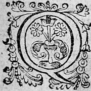
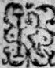
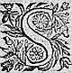
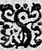

LE
HUITIESME
HUICTIESME
LIVRE DE LA
SECONDE PARTIE
D'ASTREE.
Édition de 1610, p. 489.
Édition de Vaganay, p. 309.

QUelque dessein que Leonide eust faictfait de n'avoir plus d'amour pour Celadon, si ne se pouvoit-elle deffaire entierement de la premiere affection qu'elle avoit euë pour luy, tant cestecette passion est difficilementdifficillement arrachee quand elle a jetté de profondes racines dans un cœur qui n'a point d'autre soucy. De sorte que la rencontre qu'elle avoit faite de luy, ne luy avoit pas rapporté un petit contentement : mais le desplaisir de l'avoir veu en un miserable estat n'estoit pas moindre, et se rendoit encor plus grand, quand elle se representoit l'estrange resolution qu'il avoit faitefaicte . Si bien qu'elle se trouvoit estrangement combatuë,
et ne sçavoit si elle se devoit plus resjouyr de l'avoir trouvé, que s'attrister de l'estat auquel elle l'avoit trouvé. Tant que le chemin dura, elle ne fit que penser et chercher les moyens de le retirer de cestecette façon de vivre. QuelquesfoisQuelquefois , elle avoit opinion qu'elle devoit faire entendre le tout à la Bergere Astree, afin que l'y conduisant, il laissast cestelaissa cette vie sauvage. Mais elle changeoit d'avis aussi-tost qu'elle se ressouvenoit que par ce moyen elle s'ostoit toute esperance de pouvoir jamais estre aymee de luy, sçachant bien que si Astree entendoit qu'il fust en vie, et qu'elle le peust trouver, elle luy feroit tant de demonstrations de bonne volonté qu'elleη ne devoit plus rien esperer de luy. Car encor qu'elle eust trouvé Celadon si opiniastre pour conserver l'affection qu'il portoit à sa Bergere, si ne se pouvoit-elle figurer qu'une amitié peustpeut longuement vivre seule, et se persuadoit qu'en fin l'amour feroit des merveilles pour elle, ouoù pour le moins le desdain d'Astree. Changeant donc d'avis, et se representant qu'Adamas avoit tousjours beaucoup aymé le pere de Celadon, à ce qu'elle luy avoit ouy dire, elle jugea d'estre à propos de l'avertir de la vie qu'il faisoit, s'asseurant bien qu'il y mettroit l'ordre qui seroit necessaire. Toutesfois considerant que le lieu, où Celadon s'estoit reduit, estoit le plus commode qu'elle sçauroit choisir, fustfut pour l'entretenir toute seuleseulle , fustfut pour luy rendre de grandes preuves de sa bonne volonté, elle pensa qu'il valoit mieux n'en rien dire à personne pour encores, et essayer de luy faire et η passer le temps, et leles divertir de ses
tristes
pensées le plus qu'il luy seroit possible, faisant
resolution, que si elle voyoit que sa presence et
son artifice ne le fissent point changer, il seroit
tousjours assez à temps d'en advertiravertir son oncle.
Elle s'arresta donc en cestecette resolution, et pour
l'effectuer, elle ne failloit point tous les jours de
le venir trouver, et passer toutes les heures qu'elle
pouvoit aupres de luy. Le Berger qui recogneutreconnut que le
grand soin que la NympheNimphe avoit de le visiter, ne
pouvoit proceder que d'Amour, en receut du desplaisir,
luy semblant que de le souffrir, il offençoit en
quelque sorte la fidelité qu'il avoit promise à sa
Bergere : Outre que les heures de sa visite luy
sembloient estre perduës, parce qu'il ne pouvoit
entretenir ses cheres et douces pensées. Si bien
qu'au lieu de se resjouïrresjouyr , il commença de s'attrister davantaged'avantageη
η
: dequoy la NympheNimphe s'appercevant, apres
avoir quelque temps consulté en elle-mesme, et voyant
que de jour en jour il alloit diminuant, elle resolut
de recourre aux sages conseils d'Adamas, s'asseurant
de luy en parler de sorte qu'il n'y soupçonneroit
rien à son desadvantage.
S'en revenant donc un soir de meilleure heure que de
coustume, elle trouva que son oncle qui se promenoit sur
une terrasse, qui avoit la veuë du costé de la pleine
d'où elle venoit. Et apres l'avoir salué, et que le
Druyde luy eut demandé, où elle avoit laissé Paris,
elle luy respondit que toutes ces belles Bergeres
l'avoient accompagnée jusques aupres du Temple de la
Bonne
deesse, et que Paris les avoit voulu
reconduire.
- Mais, dit-elle, mon Pere, j'ay faict une plaisante rencontre, et qui m'a retenuë, de sorte que je pensois que Paris seroit arrivé avant moy. - Et quelle est-elle, luy dit le DruydeDruide ? - c'est, respondit Leonide, de Celadon. Il faut que vous sçachiez que depuis que nous le fismes sortir du Palais d'Isoure, au lieu d'aller trouver ses parens et amis, il s'est retiré dans une caverne, où il s'est tellement caché à tous ceux de sa cognoissanceconnoissance , qu'il n'y a personne qui ne pense qu'il soit mort. - Et pourquoy, dit Adamas, a-t'il faictfait cette resolution ? - Je croy, respondit elle, qu'il a quelque maladie d'esprit et qu'il ne vivra pas long-temps : car il ne parle qu'à force, et ne vit que d'herbes, et a une si grande tristesse que vous ne le recognoistriezreconnoistriez pas. - Et d'où vous a-t'il dit, adjousta le Druyde adjouta le Druide , que ce mal luy procedoit ? - Il n'en parle qu'à mots interrompus et si peu qu'il est aisé à cognoistreconnoistre que le discours luy en desplaistdesplait . Toutesfois je pense que l'amour qu'il porte à la Bergere Astrée en est la cause. - Si cela est, respondit Adamas, il est fils de pere : car Alcippe a esté autrefois tellement transporté de l'amour d'Amarillis, que je ne vis jamais faire de plus grandes folies : Et mesme celaη fut cause qu'il laissa la vie des champs pour celle de la Cour, et qu'il fit long-temps les exercices des Chevaliers. - Et leur est-il permis, dit Leonide, de changer de cette sorte de condition ? - Ma fille, dit le Druyde,la Druide ny Celadon ny cesses autres Bergers que vous voyez le long des rives de Lignon, ny la pluspart de ceux de Loire et de Furan, ne sont pas de moindre extraction que vous
estes, et faut que vous sçachiez que leurs ayeux n'ont esleu cette sorte de vie que pour estre plus douce, et accompagnée de moins d'inquietudes. Et d'effect ce Celadon de qui nous parlons, est vostre parent fort proche. Car la maison de LaignieuLavieu η , et la sienne viennent d'un mesme tige : si bien que Lindamor, et luy vous sont parensη parentsη en mesme degré. Mon ayeul, et les bisayeuls de Lindamor et de Celadon, ayant esté freres. Leonide qui n'avoit encores sceu cette alliance, demeura estonnée, luy semblant que cette proximitéη luy deffendoit d'aymer Celadon, comme l'amour luy commandoit : toutesfois pour n'en donner cognoissance connoissance à son oncle, elle luy dit, que leur estant si proche ils estoient donc obligez d'en avoir plus de soin que d'un estranger, et que la sauvage vie qu'il menoit estoit telle qu'elle ne pensoit pas qu'il peustpeut vivre longuement. - Il faut, respondit le Druyde, que nous y rapportionsraportions tout ce que nous pourrons, et afin de n'y point faire de faute, je veux consulter l'antreautre de la vieille Cleontine : peut-estre que le Ciel a soin de luy, et que ce n'est point sans subject qu'il le retient ainsi caché. J'en ay veu d'autres qui ont esté preservez de cette sorte de diverses fortunes dont ils estoient menassezη . Cependant qu'ils parloient, Paris arriva, qui leur fit interrompre leur discours, pource qu'ils ne vouloient qu'il sceustsceut ces nouvelles, et entrantentrent dans le logis, ils se mirent à table, et quelque temps apres dans le lict, afin d'aller plus matin vers Cleontine.
Mont-verdun est un grand rocher qui s'esleve en poinctepointeη de Diamantη au milieu de la plainepleine du costé de Mont-brison, entre la riviere de Lignon, et la montagne d'Isoure. Que s'il estoit un peu plus à main-droictedroite du costé de Laigneu, les trois poinctespointes de Marcylli, d'Isoure et de Mont-verdun feroient un triangleη parfaictparfait . On diroit que la nature a pris plaisir d'embellir ce lieu sur tous les autres de cette contree. Car l'ayant eslevé dans le sein de cette plainepleine , si esgalement de tous costez, il se va estressissant peu à peu, et laisse au sommet la juste espace d'un Temple, qui a esté dedié à Tautates, Hesus, Taramis, Belenus. Et parce que c'est le plus renommé de tous ceux des Forests, c'est le lieu où les Eubages, les Sarronides, les Vacies et les Bardes se tiennent dans des grottes qu'ils ont faictes autour du Temple, dans lequel ils font leurs assemblées lors que les Druydes le leur ordonnentη . Mais ce qui est plus admirable, c'est que ce grand rocher, qui a plus de quatre mille pas de tour quand il commence de s'eslever, et de hauteur plus de quatre cens, et au sommet plus de cinq censcents , est tout couvert de terre, et d'un costé planté de vignes, et de l'autre si plein d'une menuë herbe, et si verte, que ceux, qui η du pays en corrompant son nom, l'ont appellé Mont-verdun au lieu de MontMons -Vatodun, qui signifioit la Montagne et demeure des sacrificateurs, parce qu'en langage Celte Dunum signifie forteresse, et Vates, en celuy des Romains sacrificateurs, ou ceux qui rendent les oracles, et depuis que les Gaulois avoient eu la communication
des Romains, ils n'avoient pas seulementseullement meslé leurs langages ensemble, mais aussi leur façon de sacrifier : voulant bien pour leur complaire, et s'accommoderη au peuple qui estoit victorieux, prendre quelques unes de leurs coustumes : mais ne pouvant aussi se deffaire de leurs anciennes, ny oublier leurs premieres ceremonies, ils en firent un tel meslange, qu'ils retindrent presque esgalementesgallementη η du Romain et du Celte. L'occasion qui avoit rendu ce Mont plus peuplé de ces Bardes, Eubages, Sarronides et autres, ç'avoit esté que Dryus, celuy qui institua les Druydes, ayant trouvé ce lieu plein d'une certaine divinité, qui l'inspira d'abord qu'il y fut, il pensa estre à propos d'en laisser quelque marque à la posterité. Tout ce rocher, qui pour sa grandeur se peut nommer une Montagne, est de nature tellement creux, qu'il semble quand on est dedans, que ce ne soit qu'une voute : Il y a trois ouvertures si spatieuses qu'un chariot y pourroit entrer : elles demeurent ordinairement closes, sinon lors que l'on veut consulter l'oracle, qu'il y a tousjours une Druide, qui apres le sacrifice s'en court ouvrir la porte du Dieu auquel on fait la demande, et soudain il en sort un vent assez impetueux, qui venant des concavitez de cest antre, et se froissant contre les destours du rocher, faictfait un certain bruit qui semble à des voix mal-articulées, et la Druyde tenant la teste la plus advancéeavancee qu'elle peut dedans avec la bouche ouverte, y demeure tant que le bruit dure, puis s'en revient dehors avec les cheveux mal en ordre, les yeux
esgarez et le visage tout
changé, et d'une voix tout autre qu'elle n'avoit pas,
et faisant des actions d'une personne transportée,
prononce l'oracle
que bien souvent elle n'entend pas
elle-mesme. Or ces trois portes sont dediees à trois
de leurs Dieux, ou pour mieuxη
à Dieu sous trois
divers noms, à sçavoir l'unune à Hesus, que l'on
consultoit quand il falloit faire la guerre. L'autre
à Taramis, où les choses futures s'apprenoient,
et l'autre à Belenus où les Amants addressoient leurs
sacrifices et supplications, et jamais ces portes ne
s'ouvroient toutes à la fois que le sixiesme de la
Lune de Juillet qu'ayant cueilly le Guy, ils en
venoient jetter des branches dedans. Que si alors la
Dame
de la province se trouvoit encor fille, il luy
estoit permis d'entrer dans la caverne, choisissant
pour son ChevalierChevallier celuy qu'elle vouloit prendre pour
son mary, avec lequel, et le grand DruydeDruide, ils visitoient
tout ce qui estoit dans cetteceste caverne, et voyoient
toutes les merveilles que le grandη
DruydeDruide y avoit
laissées.
Or ce fut en ce lieu où Adamas dés le matin s'achemina
avec Leonide, pour consulter Tharamis : Et apres avoir
faictfait le sacrifice des Toreauxη
blancs, selon leur
coustume, et que Cleontine
euteust esté ceinte de
verveine, et euteust jetté du sang du sacrifice contre
l'entrée, elle mit du Laurier dans sa bouche, le
macha, et touchant la serrure avec une branche de
Guy, les portes incontinent s'ouvrirent avec un grand
bruitbruict , et elle se tenant à l'un des gonds, penchapancha tout le
corps en dedans, et recevant à pleine bouche le vent qui en murmurant venoit de la caverne, y demeura fort long-temps, et en fin revint courant au lieu du sacrifice, où le DruydeDruide et tous ceux qui y avoient assistez l'attendoient à genoux, et la teste nue supplioient Teutates d'avoir leurs vœux agreables. Et d'abord qu'elle fut arrivee prenant l'un des coins de l'autel, et se levant sur le haut des piedsη , les cheveux espars et herissez, elle profera d'une voix toute changée telles paroles.
ORACLE.

A vous sage Adamas le Ciel l'η
a destiné,
Surmontez par prudence,
Et l'amour et l'enfance.
Vous le devez ainsi, puisqu'il est ordonné,
Qu'obtenant sa maistresse,
Contente pour jamais sera vostre vieillesse.
Adamas apres avoir remercié Tharamis, et supplié qu'il luy fit bien entendre sa volonté, de peur que par ignorance il n'y contrevint, partit de ce lieu, tout resolu d'assister Celadon en tout ce qu'il pourroit, puis que le Dieu luy promettoit une vieillesse contente, quand ce Berger possederoit sa maistresse. Il avoit bien desja une bonne volonté, envers luy, tant à cause
de la proximité qui estoit entre eux, que pour les merites du Berger : mais depuis la responce response de l'oracle il y fut bien davantage poussé pour son propre subjetsujet , faisant bien paroistre combien une personne interessée s'employe plus soigneusement que celle qui n'est touchée que du devoir. Prenant donc le chemin de Lignon, il s'enquit de Leonide du lieu, où Celadon estoit, et elle luy ayant monstré l'endroictendroit , il creut estre à propos de regaignerregagner le pont de la Bouteresse, et prenant le mesme sentier par où elle y avoit esté conduicteconduite sans y penser, elle luy monstra la fontaine où elle l'avoit rencontré, et en fin le buisson qui couvroit le rocher où il demeuroit. Et parce qu'ils eurent peur que s'il les appercevoit, il ne s'en fuitenfuist , ils s'en approcherent le plus doucement qu'il leur fut possible pour le surprendre. Et de fortune, il estoit couché à l'entree de sa caverne si près de la riviere, que la considerant appuyéeappuyé sur un coude, les larmes, que ses pensees luy arrachoient du cœur, tomboient dedans, et se mesloient parmy son onde : Et lors qu'ils arriverent, il reprit ainsi la parole.
SONNET.
Il se compare à la riviere de
Lignon.

RIvière que j'accroisη couché parmy ces fleurs,
Je considere en toy ma triste ressemblance,
De deux sources tu prens en mesme temps naissance,
Et mes yeux ne sont rien que deux sources de pleurs.
Tu n'as point tant de flots que je sens de malheurs,
Si tu cours sans dessein, je sers sans esperance,
En des sommets hautains, ta source se commenceη ,
D'orgueilleuses beautez procedent mes douleurs.
Combien de grands rochers te rompent le passage ?
De quels empeschemensempeschements ne sens-je point l'outrage ?
Toutesfois en un poinctpoint nous differons tous deux ;
En toy l'onde s'accroist des neigesaccroit des neges qui se fondent,
Plus on geleη pour moy, plus mes larmes abondent
Quoy que tu sois si froide, et moy si plein de feux.
Ah ! riviere, continua-t'il peu apres, qui es tesmoin que je suis le plus mal-heureux, comme autresfoisautrefois tu m'as veu le plus heureux Berger du monde : est-il possible que tu n'ayes point de regret de n'avoir voulu mettre une pitoyable fin à mes infortunes, lors que dans tes eaux
tu me sauvas si cruellement la vie ? Falloit-il que les choses mesmes insensibles conjurées ensemble contre moy, me refusassent le secours que naturellement elles donnent à tout autre ? Mais, peut-estre, tu n'as voulu consentir à ma fin, esperant d'avoir par mon moyen une troisiesme source, prevoyant bien que mes yeux, n'ayant que trop d'occasion de pleurer, t'en fourniroient d'une plus abondante que celle que tu as. Si ce dessein t'a faictfait user envers moy de cetteceste cruelle pitiéη , tu n'en seras point deceuë, puis que mes pleurs ne cesseront jamais tant que je vivray. A ce mot les souspirs donnerent un tel empeschement à la voix, qu'il ut contrainctfust contraint f d'interrompre ses paroles pour quelque temps, et lors qu'il voulut commencer, Leonide sans y penser se remua : et parce qu'elle estoit fort pres de luy, il tourna la teste de son costé, et fut fort surpris de la voir avec Adamas en ce lieu. Il se releva promptement, et vint salüer le DruydeDruide qui s'avançoit desja vers luy. La pasleur et la maigreur de Celadon, estoient telles qu'Adamas n'en futfust pas peu estonné, mais ayant autresfoisautrefois η esprouvé les forces d'Amour, il jugea bien que cetteceste violente maladie le pourroit reduire en un estat encor plus dangereux, s'il demeuroit sans remede. C'est pourquoy apres les salutations ordinaires, il le prit par la main, et le fistfit asseoir aupres de luy au mesme lieu où il estoit couché auparavant, où apres quelques discours, il luy tint ce langage. - Mais mon enfant, en quel estat est celuy où je vous trouve ? estoit-ce pour vivre de cetteceste sorte, que
vous me requistes dans le Palais d'Isoure de vous sortir de la peine où vous estiez ? Faisiez-vous dessein de vous venir renfermer dans cest Antre, et vivre loingloin de la frequentation des hommes, comme une personne sauvage ? Vous estes nay, Celadon, à quelque chose de meilleur : vous, dis-je, que le grand Taramis a particulierement doüé de la raison, ne serez-vous condannécondamné par son infaillibleinfailble jugement, si à la necessitéη vous ne produisez les effects qu'il attend de vous ? S'il a mis quantité de trouppeauxtroupeaux et de pasturages sous vostre charge, pensez-vous n'estre pas obligé de luy en rendre conte ? Tout ce qui est soubssous l'estendue du Ciel est à luy, et nous n'en sommes que les gardiens, et ne faut point douter qu'il ne nous en demande en fin un compte fort particulier. Et que luy respondrez-vous, mon enfant, quand ce temps-là sera venu ? Encores qu'il nous ait remis sous nostre volonté, si ne sommes nous pas nostres, et faut que nous attendions un rude chastiment, si nous avons disposé de nous-mesmes autrement que nous n'avons deuη . Et comment pensez-vous estre raisonnable, puis qu'en l'aage où vous estes sans soucy de vos trouppeauxtroupeaux , de vos parens ny de vos amis, vous vivezviviez comme un oursη sauvage dans les antres escartez, esloigné de la veuë de chacun, et sans vous prevaloir en cetteceste occasion des remedes que ce grand Dieu a remis entre vos mains ? Vous direz que l'affection que vous portez à la Bergere Astree vous y contraint : Mais mon enfant rentrez en vous-mesmemesmes , et considerez que si
vous l'avez offenséeoffencee , tant que vous serez loingloin d'elle, vos services n'effaceront point cette offenseceste offence , et si vous ne l'avez poins offenséepoint offencee , comment esperez-vous de luy faire cognoistre vostre innocence ? Or sus, mon enfant, je vous accorde que par le passé vous avez eu quelque raison de vous retirer de sa presence, voire mesme de la veuë de chacun, afin qu'elle cogneustcogneut qu'elle peut toute chose sur vous, et que la perte de ses bonnes graces, est du nombre de cellesη qui ne se peuvent recevoir sans perdre aussi pour quelque temps l'usage de la raison. Mais à ceste heureà cette heure il est temps que vous reveniez en vous-mesme, et que vous luy fassiez paroistre que vous n'estes pas seulement amoureux, mais homme aussi, et que si le desplaisir vous a jusques icy osté l'usage de la raison, la raison toutesfois vous est demeurée, qui peu apres a reprinsrepris sa force, afin qu'elle ne se repente pas d'avoir affectionné en vous un Amant qui n'estoit pas homme. A ces paroles d'Adamas, Celadon respondit froidement de cette sorte. - Pleust à Dieu, mon pere, que vos paroles fussent addresséesadressees à une personne qui eust une ame capable de les recevoir : car quant à moy, j'advouë qu'il ne m'est resté autre chose de l'homme que la memoire, n'en ayant plus ny l'entendement ny la volontéη , et encores je crois que cette memoire n'est demeurée avec moy, que pour la nourriture de mes ennuyeuses pensées. De sorte que, ce que vous voyez devant vous, ce n'est plus ce Celadon, fils d'Alcippe et d'Amarillis, que le grand Druyde Adamas a autresfoisautrefois
tant favoriséfavorisez de son amitié, mais seulement une vaine idole que le Ciel conserve encores parmy ces bois pour marque que Celadon sceustsceut aymer. Et toutesfois, puis que reduit en cette extremité, l'usage de la parole m'est permis pour respondre au grand Dieu Tharamis, et à tout ce que vous m'opposez, il suffit que je vous die seulement ce mot, J'AYME. Car sage Adamas, si j'ayme, comment auray-je peur d'offenseroffencer Tharamis en faisant ce que l'amitié me commande, puis qu'il a voulu ou permis pour le moins que j'aye aymé, ou ceux qui permettent quelque chose doivent en souffrir tout ce qui en dependdeppend , et qui niera que la miserable vie que je traine ne soit une dependance de cetedeppendance de cest Amour ? Et quant à ce qui me touche, celuy-là se peut-il dire amant qui a des yeux pour voir autre chose que ce qu'il aymeaime ? Ah ! Mon pere, c'est sans doute que j'ayme, et c'est sans doute aussi que je suis aveugle pour moy, pour mes trouppeaux, pour mes parensparents , et pour tout le reste des hommes. Car je n'ay des yeux que pour celle à qui je suis. Si le Ciel, comme vous dites, m'a laissé en ma puissance, pourquoy me demanderoit-il conte de moy-mesme, puis que tout ainsi qu'il m'avoit remis en ma propre conduitte et disposition, de mesme me suis-je entierement resigné entre les mains de celle à qui je me suis donné : et partant s'il veut demander conte de Celadon qu'il s'addresseadresse à celle à qui Celadon est entierement. Et quant à moy c'est assez que je ne contrevienne en rien à la donationdonnation que j'en ay faictefaite . Le Ciel l'a voulu,
car c'est par destin que je l'ayme. Le Ciel l'a sçeu : car dés que
j'ay commencé d'avoir quelque volonté, je me suis
donné à elle, et
ay tousjours continué depuis. Et bref le Ciel l'a
eu agreable : autrement je n'eusse pas esté si heureux que je me suis veu par tant d'années. Que s'il l'a
voulu, s'il l'a sçeu, et l'a eu agreable, avec quelle
justice me pourra-t'il punir, si je continuë à cette heureà ceste heure , qu'ilqui
n'est pas mesme en ma puissance de faire
autrement ? Face de moy Taramis, tout ce qu'ilqui luy
plaira, que mes trouppeauxtroupeaux deviennent ce qu'ils
pourront : Que mes parens et amis se plaignent et ayent
telle opinion qu'ils voudront, ils doivent estre tous
satisfaictssatisfaits et contents de moy quand je leur diray pour
toute raison que J'AYME. - Mais comment, respondit Adamas, voulez-vous tousjours
vivre de ceste sorte ? - L'eslection, respondit le
Berger, ne depend de celuy qui n'a ny volonté ny
entendement.
- η
Si cela est, adjousta le Druide, vous
cessez d'estre homme. - Il y a long-temps, repliqua
le Berger, que ce soucy ne me touche nullement. - Mais
si vous aymez, continua le Druide, comment ne vous
efforcez-vous de voir celle que vous aymez ? - Si
j'ayme, respondit-il, comment voudrois-je desplaire
à celle que j'ayme, ou comment luy desobeyrdesobeir ? Ou
plustost comment ne recevray-je un extreme
contentement de luy plaire et de luy obeyr ? - Mais,
dictdit le Druide, elle ne sçait pas que vous luy
obeyssezobeissez . - Il suffit, respondit le Berger, quand
il n'est pas permis d'en donner plus de cognoissance que pour nostre satisfaction nous sçavons que nous avons faictfait ce qui a esté de nostre devoir. Il n'y a point de plus fidelle tesmoingtesmoin , ny de Juge plus rigoureux contre nous que nous-mesmes. Le Druide ne sçavoit s'il devoit plus estimer la vivacité de cest esprit en cesses responces, que blasmer l'erreur auquel il estoit : mais en fin considerant, que le mal n'estoit pas encor venu à son declin, il pensa que ce seroit l'animer davantaged'avantage que de luy presenter de plus violents remedes. Cela fut cause que s'estant teu quelque temps : - Or Celadon, dit-il, ce que je vous en ay dit, ç'a seulementseullement esté pensant d'y estre obligé par les loix de l'amitié, et par le devoir de ma charge, et non pas pour vous contrarier. SeulementSeullement je veux une chose de vous, et que vous ne me devez point refuser, puis que c'est pour mon contentement. Il faut que vous scachiez que j'ay une fille que j'ayme plus que toutes les choses que la bonté de Taramis m'a donnees. Et parce qu'il n'y a nul bien entre les hommes qui soit parfaictparfait de tous poinctspoints , le contentement de ma chere fille m'est infiniment diminué par sa longue absence, et par la cognoissanceconnoissance que j'ay d'en devoir estre encor fort long temps privé. Or dés l'heure que je vous veyvy au Palais d'Isoure, il est certain que je vous aymay, pour sçavoir que vous estiez fils d'Alcippe et d'Amarilis : mais il faut que je confesse que mon amitié s'augmenta beaucoup par la veuë que j'eus de vostre visage : car d'abord il me sembla de voir ma chere fille,
tant vous avez de l'air l'un de l'autre.
Cela est cause que je vous conjure par tout ce qui a
plus de puissance sur vous, d'avoir agreable que je
vienne quelquefois interrompre vostre solitude, pour
me donner cette satisfaction de voir en vostre visage
un pourtraictpourtrait vivant de ce que j'ayme le plus au monde.
Le Berger qui estoit plein de courtoisie, luy
respondit qu'il luy feroit une particuliere faveur de
prendre cestecette peine, et que s'il n'estoit contrainctcontraint de se tenir esloigné de chacunchascun , il iroit luy-mesme
en sa maison, pour luy rendre ce service, et qu'il
remerciroitremercioit la nature de l'avoir tant favorisé que de
luy avoir donné quelques traicts ressemblants à
quelque chose qui fustfut aymée de luy.
Bref pour ne redireη
icy toutes leurs parolesparolles , qui par
leur longueur seroient peut-estre ennuyeuses, Adamas se resolut de visiter bien souvent le Berger,
esperant par ce moyen le pouvoir retirer peu à peu de
cette grande melancholiemelancolie : outre qu'il estoit vrayη
qu'Alexis sa fille ressembloit un peu à ce Berger : Et
d'autant qu'il estoit contrainctcontraint selon leurs statuts
de la laisser jusques en l'aageâge de quarante ans parmy les filles Druydes, qui demeuroient aux Antres des Carnutes, il prenoit du plaisir, voyant Celadon qui la luy representoit en quelque sorte.
Il avoit esté ordonné par Dis
Samothes, et depuis,
reconfirmé par le grand Druys
instituteur des Druydes : que les Sacrificateurs qui auroient des filsη
,
envoyeroient leurs aisnez aux escoles des Carnutes,
où dix ans ils apprenoientaprenoient leur science, dix
ans ils l'enseignoient aux autres, et dix
ans ils
servoient aux sacrifices et jugemensjugements publics, et
apres ils pouvoient retourner chez eux et exercer la
charge des Druydes
par toutes les Gaules.
Queη
s'ils
n'avoient que des filles, ils estoient contrainctscontraints d'envoyer les aisneeaynees ,
depuis l'aage de dix ans, au
mesme lieu où elles estoient instruites, puis
instruisoient, et enfin jugeoient comme nousη
avons
ditdict , car les Gaulois s'arrestoient bien souvent au
jugement de ces femmes Druydes. Et ce temps-là estant
passé, elles revenoient en la maison de leurs peres
où elles se pouvoient marier.
Or ceste resolution estant prise de cestecette sorte,
Celadon fut celuy
qui en euteust plus de profit : car des le commencement
Leonide luy rendit ses lettres qu'elle luy avoit
desrobees, qui luy fut un grand presage de meilleure fortune, ayant tousjours ouy dire, que comme les
malheurs ne viennent jamais seuls, il semble aussi
qu'un bon heur en attire un autre. Et depuis estant
visité fort souvent, tantost par Leonide, et tantost
par le Druyde, il estoit fort diverty des tristes
pensees qui le consommoient, outre que le soingsoin qu'Adamas avoit de luy donner des vivres secrettement
n'estoit pas petit. Et veritablement ce fut une bonne
rencontre pour Celadon, que la bonté du DruydeDruide et
l'affection de la NympheNimphe : car elles estoient cause
que l'un et l'autre estoient soigneux de luy outre
mesure, et par dessus leur devoir et grandeur. Mais
ce qui donna plus de soulagement à ce Berger, ce fut
que la NympheNimphe luy porta de l'ancre et du papier,
par ce qu'estant
seul, il s'amusoit à mettre par escrit les passions qu'il ressentoit ce qui le contentoit beaucoup quand ilsil η les luy relisoit ; les playes d'Amour estant de telle condition que plus elles sont cachees et tenuës secrettessecretes , plus aussi se vont elles envenimant, et semble que la parole avec laquelle on les redit, soit un des plus souverains remedes que l'on puisse recevoir en l'absenceabscenceη η . En mesme temps Adamas qui jugeoit bien que les trop continuelles pensees du Berger ne faisoient que l'arrester et rafermir davantaged'avantage en sa melancoliemelencolie, luy conseilla de passer son temps dans le boccageboccagré sacré, qui estoit aupres de là, fust à graver sur les escorces des jeunes arbres des chiffres et des devises, fust à faire des tonnes et cabinets, pour l'embellissement du lieu, et pour cet effecteffet luy apporta des outils necessaires. Ce Berger qui desja avoit repris ses forces et sa premiere beauté, ayant aussi l'entendement renforcé, cogneut bien qu'Adamas le conseilloit avec raison, de fuyrfuir ceste nonchalante oisivetéoysiveté où il avoit vescu : et cela fut cause que s'en allant de compagnieη au lieu qu'il luy avoit dictdit , il commença d'y travailler. Mais tout ce qu'il faisoit c'estoit par le dessein du DruydeDruide qui aussi comme un bon medecin s'accommodant àavec son malade, luy assaisonnoit tous ses conseils par quelque dessein d'Amour. - Voyez-vous, luy disoit-il mon enfant, encoresencore que selon nos statuts nous ne devions point faire de templetemples à Teutates, Hesus, Belenus, Tharamis, nostreη Dieu, si est-ce que depuis que ces usurpateursη de l'autruy, je veux dire ces peuples que l'on appelle
Romains, apporterentaporterent avec leurs armes leurs Dieux estrangers dans les Gaules, et que perdant nostre ancienne franchise, nous fusmes contraints de sacrifier en partie à leur façon, nous avons eu des temples où nostre Dieu àa esté adoré parmy les leurs, et parce que la coustume est passee en fin en loy, il vous sera permis, Celadon, de dedier une partie de ce BoccageBocage , non pas comme à une premiere divinité, mais comme à un tres-parfaictparfait ouvrage de ceste divinité à vostre bellezelle Astree, ce que nostre Dieu ne trouvera point plus mauvais que les Temples dediez par ces estrangers à la Deesse Fortune, à la Deesseη Maladie ou à la Deesseη Crainte : principalement si vostre ouvrage luyη estant directement consacré, vous n'adorez pas sur leurs Gazons ceste Deesse Astree, mais luy en eslevant d'autres à costé de leurs chesnes vous addressezadressez vos vœux à ceste belle, comme à l'œuvreη le plus parfaictparfait qui soit sorty de ses mains. Il faut donc plier ces arbres sur ce chesne, luy dictdit -il : luy en monstrant un assez beau, et arracher ces petits, à fin d'y faire une place que nous dedierons à l'amitié, et contre le pied du chesne, nous esleverons des Gazons en forme d'autel, sur lequel je mettray un tableau qui sera le symbolesimbole de l'amitié. Et quand celuy-cy sera finy, nous y ferons une porte pour entrer dans un autre qui sera plus spacieux, et que nous appuyerons sur ce chesne, qui veritablement, dictdit -il, est admirable, luy monstrant un grand chesne qui s'eslevoit d'un seul tronc, et puis se separant en trois branches, les reünissoit
en haut, et les
resserroit sous un mesme escorceη
.
Voyezη
-vous, luy
dit-il, que le lieu monstre que l'on y a esté
quelquesfoisquelquefois. J'y suis venu bien souvent faire des
sacrifices pour lesle
symbole que cet arbre a de
Teutates, Hesus, Belenus, Tharamis, nostreη
Dieu.
- Comment mon pere, respondit Celadon, vous en
nommez quatre, et vous ne dites que nostre Dieu ? Il
faudroit dire nos Dieux. Je ne vous en eusse pas parlé
pour une fois, mais vous l'avez desja plusieurs fois
repliqué. - Mon enfant : respondit le Druide, ce que
vous me demandez n'est pas le moindre de nos misteres,
mais plustost l'un des plus grands de la creance des DruydesDruides, et quoy que nous ne le devions reveler qu'à
ceux qui sont instruictsinstruits en nos antres, et escollesescholes : si ne laisseray-je de vous en declarer autant que vous
serez capable d'en recevoir.
Sçachez donc mon enfant, que ce grand Dis
Samothes
incontinent, apres la division des hommes, à cause de
la confusionη
des langues estant bien instruit par
son ayeul, fust en la religion du vray Dieu, fust
aux sciences plus cachees, s'en vint descendre par
l'Océan Armorique en cestecette terre, que jusques à ceste heure nous nommons Gaule, et qui peu à peu changeant ce
nom, semble prendreη
celuy de France pour l'advenir :
et depuis s'avançant et la peuplant y planta
heureusement son Sceptre, ensemble y mistmit la religion
de ses peres, et donna la cognoissance des sciences
à ceux qui plus familiers et de meilleur esprit
sçeurent mieux entendre et retenir ses enseignemens,
et qui depuis de son nom furent appellezappellees
Samothees : Et celuy-cy fut le premier Roy des Gaules, qui fut tant agreable à Dieu et aux hommes, qu'il regna longuement en paix et apres luy sa posterité avec tant d'heur, qu'il n'y a eu endroictendroit de la terre qui n'ait cogneu le nom, et la valeur des Gaulois. Que si ce peuple, que nous nommons Romain, c'ests'est η usurpé la domination des Gaulois, ce n'a point esté par les armes, mais plustost par chastiment de nos dissentionsdissensions , qui estant pleines d'animosité entre nous, ont esté cause de nous leη faire appeller, et demander secours à ceuxη de qui l'ambition nous a depuis devorez, nous apprenant, mais trop tard, qu'il ne faut jamais esperer que les estrangers nous affectionnent plus, que nous ne nous aymons nous mesmes. Mais le grand Dieu, que Samothes nous enseigna d'adorer en pureté de cœur, ne voulant estendre son ire à l'infiny, nous ayant fait passer une demie lune de sieclesη sous cestecette domination estrangere, montre qu'il nous en veut retirer par les armes des Francs, qui se vantent d'estre yssusissus des anciens Gaulois. Or pour reprendre nostre discours, le quatriesme Royη qui domina en Gaule, des descendans de ce grand et sainct Samothes, fut le sage et sçavant Dryus, de qui quelques uns pensent, que pour avoir esté instituteur des Druydes, ils ayent pris leur nom, mais ceuzceux là se trompent autant que ces Grecs outrecuidez qui se vantent que c'est de leur mot Drys, qui signifie chesne : car avant que les lettresη eussent esté portees en Grece nous estions appellez Druydes, et les sciences estoient en Gaule avant que ces peuples vains
sceussent seulement lire, comme le nom
de Druyde nous enseigne, qui au langage de l'ayeul de
Samothes signifie contemplateur, du mot Drissim, parce que comme vous sçavez, mon enfant,
nostre principale vacation consiste en la contemplation
des œuvres de Dieu.
Or ce grand Dis
Samothes, et depuis nostre sainctsaint
instituteur
Dryus, nous ordonnerent d'adorer Dieu, non
pas selon l'erreur des gens, mais ainsi qu'ils
l'avoient apris de leurs peres. Et parce que
l'ignorance du peuple grossier estoit telle qu'il ne
pouvoit
comprendre ceste supréme bonté, et toute puissance,
qu'ils nommoient Thau, c'est à dire Dieu, sans
en apprendre quelques effectseffets, ils luy donnerent
trois noms : IEHUS, qui signifie FORT, BELENOS,
c'est à dire DIEU HOMME, et THARAMIS
qui signifie
REPURGEANT, nous voulant enseigner par ces trois
noms, que Dieu est tout puissant, Createur
et
conservateur des hommes, mais depuis par les
changemenschangements que le temps et l'ignorance du peuple
apporte en toutes choses, mais principalement aux
noms, au lieu de THAU ils dirent THAUTA, et en fin
THAUTESη
, et THEUTATES. Au lieu de IEHUS, BELENOS et
THAHARAMIS, desquels l'aspirationη
sur le milieu estoit
un peu mal-aysee, ils dirent HESUS, BELENOS et
THARAMIS, et le peuple a eu tant de pouvoir sur les
plus sçavanssçavants , que chacun pour estre entendu, àa
esté
contrainct de dire comme eux, et consentir à leur erreur.
η
- Et quoy mon pere, respondit le Berger,
Teutates, Hesus, Tharamis et Belenus, ne sont-ce pas les Dieux que l'on nous dit, à sçavoir Mercure, Mars, Jupiter et Apollon, mais un Dieu seulement ? - Pleust à Dieu, mon enfant, dit le DruydeDruide, que je vous peusse bien faire entendre ce que vous me demandez : mais ou vostre intelligence ne peut monter, il faut que la croyance que vous avez en moy vous porte et vous retienne. Sçachez donc que les estrangers voyant que les Gaulois adoroient, et reclamoient THAUTATES en toutes leurs affaires, et au commencement de tous leurs voyages, et de toutes leurs actions : et de plus considerant, que naturellement ils sont eloquenseloquants , et qu'ils se plaisent à bien dire, ils jugerent que c'estoit Mercure qu'ils disent estre Dieu, non seulement de l'eloquence, mais presidant aux chemins, inventeur des arts, et le protecteur des marchands et de ceux qui traffiquent. Et apres remarquant qu'en nos guerres nous reclamons HESUS, ils creurent que c'estoit Mars, qui pour eux est tenu le Dieu des armees. Et parce que quand nous demandons d'estre nettoyez de nos fautes ils nous oyentoyoient appeller THARAMIS, ils penserent que c'estoit Jupiter, duquel ils redoutent sur tous les chastimens à cause de la foudre qu'ils luy attribuent : outre que leur semblant, que le pardon des fautes se doit attendre du plus grand de tous les Dieux, ils disoient que c'estoit Jupiter, qu'ils croyent estre le premier, et plus puissant de tous. Et parce qu'ils nous voyoient recourre à BELENUS quand nous estions en doute de nostre santé
ou de nos amis,
ou que nous desirions d'avoir des enfans, ils se
persuaderent que c'estoit leur Apollon, qu'ils
croyent estre l'inventeur de la Medecine, outre que luy donnant la conduitteconduite du Soleil, voire prenant
mesme bien souvent l'un pour l'autre, et sçachant que
le Soleilη
est la cause de la vie de tous les animaux,
et de plus que l'homme et luy engendrent l'homme, ils
eurent quelque raison de penser que c'estoit nostre
BELENUS.
Maisη
il est certain mon cher enfant, qu'il n'y peut
avoir qu'un Dieu ; car s'il nestn'est
tout puissant, il
n'est point Dieu : Que s'il y avoit deux Tout-puissanspuissants ,
la puissance seroit divisee, outre qu'il faudroit
qu'ils fussent ou semblables ou differents : s'ils
estoient semblables du tout ils seroient les mesmes,
et ainsi ne seroient qu'une chose : s'ils estoient
differentsdifferens , il faudroit que le bon fust different du
bon, ce qui ne peut estre. Je vous dis ces raisons familieresfamiliaires, pour ne vous apporter les autres qui sont
plus
fortes et plus pressantes, mais plus obscures aussi,
et plus difficiles à estre comprises. - J'ay bien tousjours
creu mon pere, dictdit
Celadon, qu'il n'y a qu'un Dieu,
Roy et Seigneur de tous les autres, mais je pensois
aussi que comme entre les hommes nous voyons des RoysRois qui ont des officiers soubssous eux, de mesme il y eusteut de
petits Dieux, soubssous celuy qui estoit le principal, et ce
grand Dieu je le nommois Teutates, et les autres,
Hesus, Taramis et Belenus que j'adorois apres
luy. - En cela mon enfant, respondit le DruideDruyde, vous
aviez quelque
raison, et toutesfoistoutefois vous faisiez une grande erreur : car ceux que vous nommez ainsi ne sont proprement que surnoms de ce grand Teutates : Et quoy que je vous advoüeavoüe qu'il ait des officiersofficiciers sous luy comme les Roys que vous dites, si devez-vous entendre qu'ils ne meritent point l'adoration qui n'est deuë qu'à un Dieu. - Et pourquoy mon pere, repliqua Celadon, les voyvois -je dans les Temples aupres de nostre grand Teutates ? - Mon enfant, respondit Adamas, je vous ay des-ja dit que les Romains ont meslé leur religion parmy la nostre : il faut que vous sçachiez que par nos loix il nous est deffendu de faire image de Dieu, parce que l'image n'estant que la representation de quelque chose, et estant necessaire qu'il y ait quelque proportion, entre la chose representee et celle qui represente nostre grand Dryus, ne jugeant pas qu'il y eust rien entre les hommes qui en η peust avoir avec Dieu nous deffendit tres-expressement d'en faire, non plus que des Temples, luy semblant que c'estoit une grande ignorance de penser de pouvoir enclorre l'immense deité dans des murailles, et une tres-grande outrecuidance de luy pouvoir faire une maison digne d'elle. Cela est cause qu'à la façon de ces anciens, pere et ayeul du grand Samothes il nous fut commandé d'adorer Dieu dans des BocagesBoccages en campagne ; BocagesBoccages toutesfois qui luy estoient consacrees par la devotion du peuple, de peur qu'ils ne fussent profanez, et en ces lieux-là on choisissoit de grands chesnes, comme nous faisons encoresencore , sous lesquels Dieu estoit adoré. Et de là est advenuavenu que les Romains
entrant en nos contrees, et voyant nos saincts Boccages, et la façon de nos sacrifices, ont dit tousη estonnez, que nous estions seulsη entre les hommes qui ne cognoissions point Dieu, ou les seuls qui le cognoissions : Et toutesfois, quoy qu'ils ayent voulu ravaler la gloire, non seulement des Gaulois, mais de tous les peuples, qui comme loups affamez, enη ont esté engloutis, si ne se sont-ils peu empescher de dire en parlant de nous, que les Gaulois sur tout sont tres religieuxη et pleins de devotion envers les Dieux. Mais d'autant que le vaincueur donne lesdes loix qu'il luy plaist au vaincu, ils en firent de mesme en Gaule, ou s'usurpant avec une extreme Tyrannie, non seulement nos biens, mais nos ames aussi, ils voulurent changer nos ceremonies, et nous faire prendre leurs Dieux, nous contraignant de leur bastir des Temples, de recevoir leurs Idoles, et de representer Teutates, Hesus, Belenus et Tharamis, avec des figures de leur Mercure, Mars, Apollon et Juppiter. Et parce que les Druydes s'opposerent vertueusement à leur abus, il y eut un de leurs Empereursη , qui par Edit du Senat voulut abolir toute nostre religion, chassant et bannissant les Druydes hors de l'Empire. Mais ce grand Teutates à permis que les bons ayent esté persecutez pour esprouver leur vertu, et non pas abolis, afin de donner cognoissance que jamais ils ne sont entierement abandonnez. Et ainsi parmy la tyrannie desde ces estrangers, nous avons tousjours conservé quelque pureté en nos sacrifices, et avons adoré Dieu comme il faut, et mesmemesmes en ceste contree, où nous n'avons jamais recogneu
la puissance de ces usurpateursη pour le respect qu'ils ont tousjours porté à Diane, de laquelle ils ont pensé que nostre grande NympheNimphe representoit la personne. Et maintenant que les Francs ont emmenéamené η avec eux leurs Druydes, faisant bien paroistre qu'ils ont esté autres-fois Gaulois, il semble que nostre authorité et nos sainctes coustumes reviennent en leur splendeur. - Mais mon pere, respondit Celadon, si ay-je bien veu dans nos boccagesbocages sacrez, lors que vous faictesfaites des sacrifices qu'il y a des Statuës et des images, quelquesfoisquelquefois du grand Dis et quelquesfoisquelquefois d'Hercule. - C'est parce respondit Adamas, que Dis et Hercule sont des hommes, et non pas des Dieux, et qu'estant hommes, on les peut representer. - Mais repliqua Celadon, si ce ne sont pas des Dieux, pourquoy les mettez-vous sur l'autel ? - Pour faire entendre dit-il, qu'ils ont esté entre les hommes comme des Dieux pour leurs vertus, et que comme tels nous les devons honorer, et conserver la memoire, afin que les autres hommes, en les voyant dressent leurs actions sur le patron qu'ils nous ont laissé, et les estrangers qui ne sçavoient pas nostre intention, ont creu que nous les adorions, et ont dit que Dis estoit Pluton duquel nous nous vantions d'estre yssus, et ont donné à Hercule le surnom de Gaulois, parce que nous en honorions beaucoup la memoire, tant pour avoir esté pleinplain de toutes vertus Heroïques, que pour avoir espousé la belle Galathee, nostre Princesse et fille de Celte nostre Royη . - Vous me racontez, dit Celadon tout estonné, des choses qui me ravissent, et
vous supplie mon pere de
continuer et de me dire comment il faut que je fasse
quand j'entre dans ces Temples ouoù je trouve des images
de Jupiter, de Mars, de Pallas, de Venus et de
semblables Dieux et Deesses. - Mon enfant, respondit Adamas il faut que vous y alliez fort retenu, et
que sur tout vous ne preniez pas cela pour des Dieux
separez, mais pour les vertus, puissances et effects d'un seul Dieu, et qu'ainsi, vous adoriezη
Juppiter comme la grandeur et Majesté de Dieu, Mars, comme sa
puissance : Pallas comme sa sapience, Venus comme
sa beauté, et ainsi des autres. Par ce moyen les
adorant comme je dis, vous refererez tout à nostre grand Teutates, et honorant les grands Heros pour leur
vertu,
vous vous monstrerez juste de rendre à ces
vertueuses personnes, apres leur mort, l'honneur que
vous n'avez peu leur faire durant leur vie. Et que
cela vous suffise pour ceste fois, attendant que la
frequentation que vous aurez avec moy vous en
apprenne peu à peu davantage.
Or mon enfant laissant donc tous ces discours à
part, nous ferons icy une forme de Temple dans ce
Bocage qui de long temps a esté consacré à Teutates,
c'est-à-dire à Dieu : entant que
ce sera dans un
BocageBoccage , nous observerons nos anciennes ordonnances,
et pource qu'il y aura un Templeη
, nous obeyronsobeirons à ces
estrangers. Et pour l'intelligence de ce que je viens
de vous dire, j'escriray au Tronc de ce chesne
merveilleux, le sainct nom de Teutates : puis en
ces trois branches qui s'en separent, à la droitte je
mettray Hesus, au
milieu Tharamis, et à l'autre
costé Belenus, et en ce tronc d'enhaut où ces trois
branches se viennent reünir, nous graverons encores le
sacré nom de Teutates, pour monstrer que nous
n'entendons qu'un Dieu sous ces autres trois paroles.
Que si j'osois vous descouvrir la profondité de nos
saincts mysteres
saints misteres
et les secrets plus cachez de nostre
religion, je vous dirois, une interpretation que
Samothes, le plus sçavant de tous les hommes nous
a laissee, et qui de pere en fils est venuë jusques
à nous : C'est que ces trois noms signifient trois
personnes qui ne sont qu'un Dieu, LE DIEU FORT, le DIEU HOMME, et le Dieu REPURGEANT : le Dieu fort est le Pereη
, le Dieu homme, est le Fils, et le Dieu Repurgeant, c'est l'Amour de tous les deux,
et tous trois ne font qu'un Teutates, c'est à dire un
Dieu, et c'estη
à la mere de ce Dieu homme à qui nos
Druydes ont dedié dans l'antreentree des Carnutes, il y a
plus de vingtη
siecles : un Autel avec une statuë d'une
pucelle tenant un enfant entre les bras, avec ces mots. A LA VIERGE QUI ENFANTERAη
. Mais mon enfant vous
n'estes pas capable de ces hauts mysteresmisteres, et vaut
mieux pour ne les profaner, que je m'en taise,
Peut estre adviendra-t'il que quelque sçavant Druyde
venant en ce Boccage sacré, adorera Teutates en
pureté de cœur comme nous, et loüera nostre ouvrage,
en approuvant nostre bonne intention.
Le Druyde alloit discourant de ceste sorte, des mysteresmisteres les plus cachez de sa religion ; et parce
qu'ils surpassoient l'entendement du Berger,
il n'en
voulut point dire davantage : mais soudain que ces
noms furent gravez contre l'arbre ils se jetterent
tous deux à genoux, et les adorerent, et ne s'en
approcherent plus qu'avec beaucoup de respect. Mais
d'autant que le Druyde avoit opinion que s'il ne flattoit un peu le mal de Celadon, il perdroit peu
à peu la devotion et la volonté d'y travailler, il
nomma le Temple du nom de la Deesse Astree : - Et ne
craignez, dit-il, mon enfant, de faillir envers Dieu,
pourveu que vous y honoriez cestecette
Astree comme l'un
des plus parfaicts ouvrages qu'ilη
ayt jamais fait voir
aux hommes. Celadon y consentit aysement, et plein
d'un zele incroyable y travailla si assiduellement, qu'en peu de jours il acheva ce que le Druyde luy
avoit ordonné,
qui loüant sa diligence, et son industrie, afin de
luy augmenter la volonté qu'il avoit, apporta les loix
d'amour et le tableau de la reciproque Amitié :
mais s'approchant de l'Autel d'Astree, il ne sçavoit
ce qu'il y mettroit dessus pour le faire voir et
recognoistre, et apres y avoir pensé quelque temps.
- Si vous estiez
bon PeintrePaintre , luy dit-il, vous avez bien la memoire
assez vive pour vous ressouvenir des traictstraits du visage
de la belle Astree : de sorte que vous pourriez bien
la peindre, et nous la mettrions sur cet Autel qui luy
est dediéη
: mais cela n'estant pas encores, je feray
faire un petit tableau où j'escriray seulement son
nom. Alors le Berger luy fit ceste responserespondit .
η
- Vous avez raison,
mon pere, d'avoir ceste
bonne croyance de moy, car veritablement j'ay non seulement les traictstraits de son visage si bien gravez en la memoire, qu'il me semble qu'elle est tousjours devant mes yeux, mais aussi son parler et ses façons de faire me sont tellement en l'ame, qu'il faut advoüeravoüer que rien ne me peut divertyrdivertir ny separer d'elle, et me figurant à tous coups de la voir devant moy, il me semble que sa paroleparolle de mesme, me frappe tousjours aux oreilles. Mais encores que je ne sçache pas peindrepaindre , si ne laisserons nous pour cela d'avoir sa ressemblance, si vous me promettez de me rendre ce que je vous remettraymettray entre les mains. Et le Druide le luy ayant promis, il decrocha sa juppe et ouvrant la boiteη qu'il portoit au col, il luy monstramontra la peintureη d'Astree. - Mais mon pere, luy dit-il si vous la perdez, ou que vous ne me la rendiez, c'est chose tres-asseuree que j'en mouray de desplaisir, et qu'il n'y a excuse ny consolation qui m'en puisse garantir. Apres qu'Adamas eut promis par Teutates qu'il la luy rendroit, le Berger la luy remit entre les mains, mais non sans l'avoir baisee plus d'une fois, et l'accompagnant tousjours de l'œil, comme la regrettant desja, le DruydeDruide l'ayant quelque temps consideree. - Vrayement, dit-il mon enfant, ta folie est belle, et faut advouër que je ne crois pas qu'il y ait visage plus beau, ny auquel il se lise une plus grande modestie d'Amour, ny une plus douce severité. Heureux le pere qui a un tel enfant, Heureuse la mere qui l'a eslevee ! Heureux les yeux qui la voyent, mais plus heureux η celuy qui aymé d'elle la possedera. A ce mot il la remit en sa boiteη ,
avec promesse de la
rapporter bien-tost, ce qu'il fistfit
dans cinq ouoù six
jours.
Ce fut en ce lieu qu'Astree et sa trouppe entrerentη
et virent
tant de vers et d'escritures de Celadon, car depuis
le Berger s'y plaisoit de sorte qu'il estoit tousjours
ordinairement, devant l'image de sa Bergere, et
l'adoroit de tout son cœur, et selon que les diverses
imaginations luy venoient, il les escrivoit et les
mettoit comme pour offrandeoffrendre sur l'autel de la Deesse
Astree, et ce
fut ce Berger et Adamas que
Silvandre rencontraη
la nuict discourant ensemble, car
le Druyde par cestecette frequentation l'ayma de sorte
qu'il oublioit presque toute autre chose, et de mesme
le Berger se sentoit tellement obligé à l'assistance
qu'il recevoit de luy qu'il l'honoroithonnoroit comme son
pere. Leonide depuis ce temps-là n'alloitaloit plus si
souvent visiter les Bergeres qu'elle souloit, feignant
lors que Paris luy en demandoit la raison, que la
chasseη
l'occupoit entierement. Or Celadon
vesquit de cestecette sorte, quelquesfoisquelquefois moins,
quelquesfoisquelquefois plus affligé, selon que ses pensees le
traitoient : Jusques à ce qu'il rencontraη
Silvandre,
entre les mains duquel il remit la lettre qu'il
escrivoit à la Bergere Astree, et qui depuis fut
cause de faire venir toute cestecette trouppe de Bergeres
et de Bergers en ce lieu où s'estant esgaree, elle
fut contrainte de se reposer, en dessein de partir aussi-tost que la Lune commenceroit de paroistre : mais la
peine que ces Bergeres avoient euë le jour et une
partie de la nuict avec la fraischeur du lieu, les
assoupit d'un plus long sommeil qu'elles n'avoient
pensé : car tant
s'enfautfalut qu'elles se resveillassentreveillassent lors que la Lune se leva, que le jour estoit desja grand, que les Bergers mesmes estoient encor tous
endormysendormis . Au contraire le triste Celadon, suivant
sa coustume, se leva de grand matin, afin de pouvoir
entretenir ses pensées sans estre rencontré de personne,
ayant ordinairement accoustumé de se lever à telle
heure, afin de pouvoir sortir dehors, quand chacun
estoit encor endormy, et puis se renfermoit le plus
souvent tant que le jour duroit.
Leη
Soleil ne paroissoit point encoreencores , lors que de
fortune il addressaadressa ses pas du costé où estoit cette
troupeceste trouppe : Et parce qu'il s'en alloit tout en ses
pensées, sans prendre garde à ce qui luy estoit
autour, jamais homme ne fut plus estonné que luy,
quand tout à coup il apperceut Astrée. Elle avoit un
mouschoirmouchoir dessus les yeux qui luy cachoit une partie
du visage, un bras sous la teste, et l'autre estendu
le long de la cuisse, et le cottilloncotillon un peu
retroussé par mesgarde, ne cachoit pas entierement
la beauté de la jambe : Et dautant que son corps de juppe la serroit un
peu, elle s'estoit delasséedeslassée, et n'avoit rien sur le
sein qu'un mouschoir de reseul, au travers duquel la
blancheur de sa gorge paroissoit merveilleusement,
du bras qu'elle avoit sous la teste, on voyoit la
manche avallée jusques sous le coude, permettant ainsi
la veuë d'un bras blanc et potelé, dont les veines
pour la delicatesse de la peau par leur couleur
bleuë, descouvroient leurs divers passages. Et quoy que de cette main elle tint sa coiffure qui la nuict
s'estoit destachée, si
est-ce que pour la serrer trop negligemment, une partie de ses cheveux s'estoit esparse sur sa jouë, et l'autre prise à quelques ronces qui estoient voisines. O quelle veuë fut celle-cy pour Celadon ! Il fut tellement surpris, qu'il demeura immobile sans poulx, et sans haleine, et n'y avoit en luy autre signe de vie que le battement du cœur, et la veuë qui sembloit estre attachée sur ce beau visage. Mais il luy advint lors comme à ces personnes qui ont longuement demeuré dans des profondes tenebres, et qui sont tout à coup portées aux plus clairs rayons du Soleil : car tout ainsi qu'elles demeurent esbloüyes par trop de clarté, de mesme pour avoir trop de contentement, il n'en pouvoit joüyr d'un seul, les ayant eu tout à coup, et venant de quitter l'obscurité de ses desplaisirs. Quelque temps apres, ayant repris un peu plus de force, il commença de considerer ce qu'il voyoit, tantost regardant ce visage aymé, tantost le sein, de qui les thresors ne luy avoient jamais esté si descouvertsdescouvers η , et sans se pouvoir saoullersaouler de considerer toutes ces beautez, il eust voulu comme un nouvel Argus, avoir tout le corps tout couvert d'yeux : mais lors qu'il estoit en cette agreable contemplation, voila sa pensée qui luy represente incontinent un souvenir qui luy trouble toute sa joye. - Retire-toy, luy disoit-elle, retire-toy, infortuné Berger, de ce lieu bien-heureux, et qu'il ne soit point davantaged'avantage profané par tes yeux : As-tu desja mis en oubly la deffensedeffence qui t'a esté faicte ? ne sçaysçais -tu qu'il ne t'est pas permis de te presenter devant ses yeux ? Et peux-tu
mettre
en oubly ce commandementη
, ouoù si tu t'en souviens, y
peux-tu contrevenir. Il se retira les brasη
croisez
et les yeux tendusη
au Ciel, apres ces parolesparolles , comme
si c'eussent esté des chaines qui le retirassent avec
violence de ce lieu ? mais certes ses pensées et ses
pas faisoient bien un different chemin, car plus
l'un l'esloignoit d'Astrée, et plus l'autre l'en
approchoit. En fin l'ayant perduë de veuë, il
demeura si troublé, qu'il fut contrainctcontraint de s'arresterarester tout court. - De m'en aller, disoit-il, je ne puis ; de
m'y en
retourner, je n'oserois : de demeurer icy, je me travaille en vain, à quoy nous resoudrons-nous donc ?
A recevoir, disoit-il apres, la faveur que le Ciel nous
a faictefaite sans la luy avoir demandée. Mais comment
contreviendrons-nous au commandement de celle à qui nous
n'avons jamais desobey ? mais, se respondoit il,
ne contrevenant point à ce qu'elle m'a commandé,
n'est-ce pas faute d'amour, si par crainte je me prive
de sa veuë : Or elle ne m'a pas commandé de ne la voir
point : car deslors je me fusse privé de mes yeux, mais
seulement que je ne me fisse point voir à elle. Mais
comment me verra-t'elle en dormant ? Prenons donc
Amour pour guide, et sous sa conduitte, allons-le adorer en elle, comme au lieu ou il est en sa plus
grande gloire. Porté de cette consideration, il retourne sur ses pas,
et marche le plus doucement qu'il peut pour ne
l'esveiller, et d'aussi loin qu'il la peut
appercevoir se jette à genoux, l'adore et luy
addresse d'une voix basse cette priere.
- Grande et
puissante Deesseη
, puis que les
Dieux ne font pas mieux
paroistre leur divinité, en punissant qu'en
pardonnant, voicyη
je me jettegette à genoux. Je ne veux
point entrer en jugement avec toy, ny demander si la
peine que j'ay supportée n'outre-passe point la
grandeur de ma faute, puis qu'elle a esté commise par
ignorance, mais seulementseullement je te requiers que la
pitié t'esmeuveesmeu
en ce que mon amour t'a laisséη
insensible, et de rendre aussi bien cette preuve de
ta divinité, en me remettant en ma felicitéfecilité perduë,
que tu m'as osté le bon-heur où tu m'avois eslevé,
puis que ma soubmission ne te doit pas moins esmouvoir au pardon que mon offence incogneuëinconnuë au chastiment.
Ainsi disoitη
le triste Berger, n'osant presque laisser
sortir ces mots de ses levres, de peur d'esveiller
celle à qui il les addressoitadressoit : Et lors se relevant,
s'approcha davantage d'elle, afin de la mieux
considerer : Mais lors qu'il estoit plus avant en cette
contemplation par malheur Philis se tourna d'un
costé sur l'autre, sans toutesfoistoutefois ouvrir les yeux,
nyn'y s'esveiller : ce qui donna tant à craindrede crainteη
η
à
Celadon, que se retirant promptement à costé, il fut
contraint de s'en retourner en sa triste demeure, où
il ne se fut plustostplutost r'enfermé, que repensant à cette
rencontre, et à celleη
du jourη
precedentη
, il ne sçavoit
s'il en devoit prendre un presage heureux, ou
malheureux. En fin considerant l'effect de la lettre
qu'il avoit remise entre les mains de Silvandre (car
il croyoit bien qu'Astrée en avoit sceu quelque
chose) il se resolut d'en hazarder une autre, et pour
ne perdre temps se despecheadespecha de l'escrire,
de peur que s'il tardoit trop, ces Bergeres ne s'esveillassent. Il met sur le ply de la lettre, comme il avoit desja faictfait sur l'autreη , et sortant hastivement s'en va au grand pas où il avoit laissé sa Bergere, mais ayant peur qu'elles ne se fussent esveillees lors qu'ilqui les approcha, il se couvrit de quelques arbres, et estendant la veuë de tous costez cogneutconnut bien qu'elles ne s'estoient point esveillees : mais aussi il vit bien que la compagnie estoit plus grande qu'il n'avoit creu au commencement, parce qu'il apperceut un peu loingloin d'elles les Bergers dont nousη avons parlé : Et pour sçavoir s'ils dormoient, et s'ils estoient de sa cognoissanceconnoissance il s'approcha doucement du lieu où ils estoient, et le premier qu'il rencontra fut Silvandre. - Ha ! fidelle amy, luy dit-il d'une voix basse, laquellequ'elle est l'obligation que je t'ay, puis que tu as plus faict pour moy que je ne t'avois osé demander ! PuissesPuisse -tu, Berger, recevoir de quelqu'unη des miens pour remerciement de ce bien-faictbienfait quelque office signalé aupres de Diane, puis que de moy il ne faut que tu esperes que de simples souhaits : Et lors tournant les yeux sur les autres quatre Bergers qui estoient aupres de luy, il n'en peut recognoistrereconnoistre aucun : bien luy sembla-t'il d'avoir veu Tircis autrefoisη : voyant donc qu'ils estoient tous endormis, il s'achemine vers les Bergeres. Le Soleil estoit desja assez haut et trouvanttrouvans passage entre les arbres commençoit d'esclairer en quelques lieux sur elles, de sorte que si ce Berger eust esté aussi juste Juge des beautez qu'il estoit parfaictparfait amant, il eust
bien peu dire à laquelle de toutes il falloit donner le prixη de la beauté : mais si les longs ennuis d'Astree luy faisoient en quelque chose ceder pour lors à Diane, l'affection du Berger suppleoit de sorte à ce defaut que le jugement n'en estoit jamais donné par luy à son desadvantageη . Et lors considerant particulierement Astrée, il se remet sur un genoüilgenoux , et s'approchant de sa belle main ne peut s'empescher de la luy baiser puis advançantavançant la jambe, et traisnanttrainant l'autre doucement, luy mit sa lettre dans le sein, et transporté d'amour ne se peut garder d'accompagner sa main de la bouche. O ! perdu Berger, quel futfust alors le transportη qui en teη relevant teη porta jusques à sa bouche ? Il fut tel, en fin qu'oubliant presque la crainte qu'il avoit euë de l'esveiller, il lη 'appuya de sorte dessus, que la Bergere donna signe de s'esveiller, et commençoit d'ouvrir les yeux lors qu'il s'estoit à peine relevé : Et n'eust esté que de fortune les rayons du Soleil qui luy donnoient sur le visage l'esblouyrent de leur prompte clairté, il n'y a point de doubtedoute qu'elle l'eust recogneurecognu : mais cela fut cause qu'elle ne peut que l'entrevoir comme une ombre, et lors qu'elle voulut tourner la teste pour le suivre des yeux, ses cheveux qui estoient, comme j'ayη dictdit pris à des ronces, s'arresterentη avec telle douleur qu'elle ne peut s'empescher de faire un cry assez haut, dont Philis s'esveilla en sursaut, et luy demandant quel subjectsujet elle avoit de crier, Astrée luy monstra ses cheveux, n'ayant encores la force de parler, tant elle estoit
estonnee de ce qui luy estoit advenu. Philis en sousriant les luy desprit, et se voulant r'asseoirrasseoir en sa place, elle vit qu'Astrée s'estoit levee, et avoit laissé cheoir un papier. Elle fut curieuse de le r'amasserramasser , et de la suivre à quinze ou vingt pas du lieu d'où elles s'estoient levees. Et lors la triste Astrée s'estant assise contre un arbre devint pasle outre mesure, et sembloit presque sur le pointpoinct d'esvanouyr : dont Philis estonnée courut incontinent la soustenir, et lors qu'elle futfust un peu revenuë. - Helas ! ma sœur, dit-elle à Philis, avec un grand souspir, helas ! qu'est-ce que j'ay veu ? Et lors elle se taisoit pour quelque temps, estant contrainte de souspirer, et peu apres recommençant par un grand souspir, elle disoit : - Helas ! ma sœur, j'ay veu Celadon, je veux dire que j'ay veu ce qui reste de Celadon. A ce mot de Celadon la voix se perdit en sa bouche, et la langue s'attacha à son Palais, puis serrant les mains ensemble, et tenant les yeux tendusη au Ciel, sembloit luy demander secours en ce travail. Philis qui la veidvist en cet estat, ayant ouy le peu de paroles qu'elle venoit de dire, euteust soudain opinion qu'elle avoit eu quelque songe estrange qui l'avoit épouvantee de cetteespouventee de ceste sorte : et pour l'en divertir, - Ma sœur, luy dit elle, c'est une folie de croire aux songes, car l'imagination nous represente en dormant ce que nos yeux ont veu en veillant, ou que nous avons faictfait ou pensé, si bien qu'ils ne sont pas presages du futur, mais seulement images du passé. - Ah ! ma sœur, interrompit Astree, ne
croyez point que ce soit songe. Je l'ay veu de mes yeux, et soudain qu'il a cogneuconneu que je le regardois, il s'est esvanoüyesvanoui en l'air. - Peut-estre, ma sœur, respondit Philis, aviez-vous opinion de veiller : car cela advient bien souvent en dormant. - Ne vous figurez point cela, dictdit Astree, veritablement je veillois. - Et comment est-ce, dictdit Philis, que vous avez pris garde à luy ? - J'estois, respondit Astree, ny bien esveillee, ny bien endormie, lors que je l'ay ouy souspirer autour de moy, voire jusques aupresη de mon visage, j'ay ouvert les yeux et ay veu l'ame de mon Berger devant moy. Mais ô Dieu, combien belle et pleine de clairtéη ! Elle estoit telle qu'il n'y a Soleil qui porte plus de rayons. Jugez-le, ma sœur, puis que j'en suis demeuree esbloüye, jusques à ce que j'ay esté icy. Mais aussi-tost que j'ay jetté l'œil sur luy il s'est perdu aussi viste qu'un esclair. Et vrayement, ô belle ame ! tu as raison de ne vouloir que la veuë de celle qui a sceu si mal mesnagerη ta vie te soüille : Si te suis-je infiniment obligée, puis qu'ayant tant d'occasion de me hayr, tu me fais toutesfoistoutefois paroistre que ton amour continuë. Philis toute estonnee creut alors que veritablement c'estoit l'ame de Celadon, et luy dit : - Tout ce que nous pouvons faire pour ceux qui ne sont plus en cette vie, c'est d'en avoir la memoire, d'en redire les vertus et de leur rendre le dernier office de pitié, qui est la sepulture. De sorte que je suis d'advis, dictavis, dit -elle, que pour vostre contentement et pour satisfaire à cette ame qui vous a tant aymee, vous
luy fassiez dresser un tombeau, afin de la mettre en quelque repos, et puis en conserver la memoire parmy nous le plus longuement qu'il vous sera possible. - Cela, dit Astree, feray-je toute ma vie : mais, ma sœur, ne sera-t'il point trouvé mauvais, si n'estant point de mes parens, je luy rends ce dernier office de la sepulture ? - Que peut-on dire, respondit-elle, sinon que ses parens, ne faisantfaisoient pas leur devoir en cecy vous faictesfaites ce qu'ils devroient faire ? Que s'il estoit en vie, il y auroit apparence de faire quelque doubtedoute, mais à cette heure qu'il est mort on ne peut soupçonner que vostre amitié passee qui n'est guiere plus incogneuëinconnuë qu'à ceux qui n'ont jamais ouy dire vostre nomη . Disant ces parolesparolles , elle tenoit le papier qu'elle avoit ramassé, et de fortune Astrée jettant l'œil dessus, et recognoissant l'Escriture de Celadon, luy demanda quelle lettre elle tenoit en la main ? Elle respondit qu'elle l'avoit ramassee, et que c'estoit elleη qui l'avoit laissé choir quand elleη s'estoit levee. - J'ay bien senti, dictdit alors Astree, que quelque chose m'est tombee du sein, mais j'estois tant hors de moy, que je ne l'ay pas veuveuë . Et lors la prenant, et lisant ce qui estoit au dessus, elle dit que c'estoit la lettre que Silvandre avoit trouvee. - Cela ne peut pas estre, dit Philis, car je l'ay serree dans ma poche. Et y mettant la main la trouva. - Que sera-ce donc, respondit Astree, si est-elle escrite de la mesme main, et lors la despliant elle trouva qu'elle estoit telle.
LETTRE
DE CELADON A LA
BERGERE ASTREE.

SI l'occasion de vostre venuë en ce lieu où le reste de Celadon est encore, puis que les Dieux le veulent ainsi, n'est que pour voir combien vous avez peu, et pouvez sur luy, c'est trop de peine pour chose de si peu de valeur. Que si quelque estincelle de compassion vous y ameneameine , quels services peuvent meriter une si grande recompense ? Et si la fortune seule vous y a conduitte sans dessein, n'est-ce pas trop de bon-heur pour une personne si malheureuse ? De sorte que quelque occasion que ce puisse estre, j'advoüe que c'est sans raisonη . Si ce n'est qu'il soit tres raisonnable que comme l'affection que je vous porte outre-passe toutes les bornes de la raison, de mesme en ce qui touche cette affection la raison n'ait point de lieu. Et par ainsi je ne me dois plaindre qu'elle n'aytait esté appellee quand j'ay esté banny, ny qu'aux ennuysennuis que je souffre elle ne puisse avoir quelque place, estant tres-juste que celuy qui le premier a desdaigné la
raison, sente que la raison aussi
le desdaigne. Si ne laisseray-je de vous remercier autant que peut
faire l'ombre vaine de ce que j'ay esté (car
veritablement je ne suis plus autre chose) si vous
estes venu
venuë
voir combien vous pouvez sur moy, car comme que ce soit, c'est un de mes plus grands desirs
d'estre en vostre memoire. Je vous remercie de mesme
si la pitié vous y ameine
amene
, car encor qu'elle soit bien
tardive, ce n'est pas estre sans consolation que
d'avoir en fin quelque consolation. Et aussi vous
remercieray-je si c'est la fortune, puis que je connois
cognois
par là qu'il n'a tenu qu'à elle que je n'aye plutost ressenti les effets
plustost
ressenty les effects
de vostre douceur : Et cette
derniere consideration sera cause que comme par le
jugement de tous ceux qui vous voyent, et par la
grandeur de mon affection vous estes la plus belle et
plus aimee
aymee
Bergere de l'univers, de mesme je me
diray, puis que ma fortune et ma constance le veulent
ainsi, le plus infortuné comme le plus fidelle de vos
serviteurs.
Ce fut bien alors que ces Bergeres creurent que Celadon estoit mortη , et que l'amour fit resoudre Astree de luy rendre le dernier devoir de son amitiéη , et lors qu'elles se vouloient lever pour esveiller Diane et les autres Bergeres, parce qu'il estoit desja tard et qu'elles
craignoient que l'on ne fust en peine d'elles en leur hameau, Elles apperceurent que Sylvandre estoit venu aupres de Diane qui dormoit, et que demeurant ravy à la regarder apres avoir esté quelque temps immobile, en fin il dit fort haut telles paroles.

LA belle dont l'Amour me prive de reposη
,
Reposoit doucement sous l'ombre d'un boccage,
Là voloient les amours autour de son visage,
Qui naissoient de ses yeux encor qu'ils fussent clos.
Là les Zephirs changez en amoureux propos,
Rendoient pour sesces Amours un amoureux hommage :
Et les arbres chargez de tant d'Amours esclos,
N'en estoient guarantisgarentis par les loix de leur aage.
Hommes, Faunes, ny Dieux, rien n'estoit à l'entour,
Contemplant ce sommeil, qui ne bruslat d'Amour,
Et perdistperdit le reposη
pendant qu'elle repose.
Quelle estes-vous beauté, quand vaincreveincre vous voulez,
Puis que sans ce dessein tellement vous bruslez,
Que vous voir, vous aimeraymer n'est qu'une mesme chose.
Il parloit ainsi haut, parce qu'il ne craignoit de l'esveiller, ayant eu commandement d'elle de le faire aussi tost mesme que la Lune luyroit : mais la bonne fortune de Celadon ne le voulut, afin qu'il eust ce contentement
de voir sa maistresse en ce lieu, et futη cause qu'encor que Silvandre euteust veillé une partie de la nuict, il n'eutnuit, il n'eust toutesfois la hardiesse d'interrompre le sommeil de sa maistresse, craignant qu'elle s'en trouvasttrouvat mal, ou que peut estre elle eust trop d'incommodité à marcher soubssous la foible lueur de la Lune parmy ce bois. Apres que ce Berger eut proferé ces paroles, il se mit à genoux pour luy baiser une main, mais ayant peur d'estre apperçeu de ces deux Bergeres qu'il ne vit plus en leurs places, il se releva marry d'en avoir tant fait, si toutesfois il avoit esté veu. Cependant ces deux Bergeres le regardoyentregardoient , et Philis qui estoit bien aise de divertir Astree. - Ne me croyez jamais, ma sœur, luy dit elle, si ce Berger n'ayme Diane, et s'il n'a esté moins fin qu'il ne pensoit estre. - J'en parlois hier à Diane, respondit tristement Astree, et selon ce que j'en peus recognoistre, il n'en doit attendre que du desplaisir : car non seulement elle ne le veut point aymer, mais ne veut pas mesme sçavoir qu'il l'ayme. - VoylaVoila , adjousta Philis, une resolution qui semble devoir conduire en peu de temps Sylvandre aux termes de Celadon, et Diane à ceux d'Astree. - Ha ! ma sœur, dit Astree, Sylvandre court bien cette fortune, mais tant que Diane s'exemptera d'amour, elle ne jouëra jamais un si mal-heureux personnage que le mien. - Je vous l'advouë, repliqua Philis, que tant que veritablement elle sera exempte d'amour, elle ne sera point en ce danger : mais si ce n'estoit que par dissimulation qu'elle en fust exempte, qu'en jugeriez vous ?
- Qu'elle seroit heureuse par opinion, dit Astrée, et qu'en effect elle seroit mal-heureuse : mais il n'y a gueres encores d'apparence : l'humeur de Diane et les perfections de Silvandre n'estant point telles que la Bergere puisse estre prise facilement, ny luy propre subjetsujet pour la pouvoir prendre. Et à ce mot prenant Philis par la main, elle se leva pour aller trouver Diane : toutesfois Philis ne laissa de luy respondre : - O ma sœur, que vous estes deceuë si vous avez cette opinion ! car pour ce qui concerne les merites de Silvandre, croyez que quand un Berger a dessein de plaire, il se rend tout autre qu'il n'est pas lors qu'il vit nonchalamment. De là advient que quelquefois l'on s'estonne si fort de voir des Bergers cheris et aymez, que l'on juge toutesfoistoutefois si desagreables : Et de là, ce crois-je, àa pris naissance ce vieil Proverbe : Nulles amours laides ; voire je diray bien davantage, que je n'ay encores veu jusques icy Berger, qui ait esté desagreable à celle qu'il a recherchee s'il n'y a point eu d'autre occasion de haine que son amour, tant cetteceste recherche et ce desir de plaire, rendη agreablesagreable ceux qui ont dessein de se faire aymer. Que si cela advient en general à tous, à plus forte raison à Silvandre, de qui le corps n'est point si desagreable que la beauté de l'esprit ne puisse aisement suppléer à tous ces defaux, et quant à ce qui est de l'humeur de Diane l'amitié qu'elle a portee à Philandre est une preuve certaine qu'elle n'a pas tousjours esté insensible à l'amour : Et qui peut empescher que ce qui luy est arrivé une fois ne luy advienne encoreencor une autre ?
Quant à moy je croy qu'Amour n'a pas oublié
l'addresseadresse dont il
usa la premiere fois qu'elle fut blessee, et que
Silvandre peut bien avoir la mesmeη
fortune que Philandre a euë. - C'est pourquoy (respondit Astree en luy serrant la main) je tiens pour chose impossible
que jamais Diane se laisse reprendre à l'Amour : Et en cela nous sommes vous et moy de differente
opinion ; car je croy que fort aisémentaysement une fille qui
n'a jamais rien aiméaymé se laissera emporter à ces douces
flatteries, mais du tout impossible selon mon humeur qu'une personne advisee ayant aiméaymé et perdu la
personne aymeeaimee , puisse jamais plus laisser prendre
racine à un autre amour dans son ame, et me semble
que pour cette occasion le CiprezCyprez seroit un bon
Symbolesimbole de mon amitié, puis qu'estant couppépuisque s'estant coupé il ne
rejette jamais. A ces dernieres paroles elles arriverent si pres de
Diane que Philis ne luy peutpeust respondre autre
chose sinon ; - Nous verrons bien tost, ma sœur, qui de
nous deux aura faictfait un plus certain jugement.
Cependant que ces Bergeres parloient de cetteceste sorte,
Paris, Hylas, Tyrsis et Thersandre ayant esté
esveillezéveillez par Silvandre, s'en venoient trouver ces
Bergeres, et parloient si haut en s'en approchant, que
Diane s'esveilla presque au mesme temps que Philis
la vouloit pousser de la main. Elle fut honteuse de se
voir presque toute deshabillee en si bonne compagnie,
et cela fut cause que ramassant son poil d'une main
et couvrant son sein de l'autre elle s'esloignaeslongna entre
quelques arbres, où Astrée et Philis la suyvirentsuivirent ,
et luy raconterent cependant
qu'elle se coiffoit, la vision d'Astree, la lettre qui luy estoit tombeetumbee du sein, et en fin la resolution qu'elle avoit prise de faire un vain tombeau à l'ame de Celadon, puis que ses parens n'avoient point de soucy de son repos. - Cet office, respondit Diane, est vrayement plein de pitié et de pieté, et quant à moy il n'y a rien que j'y des-appreuvedes-apreuve , sinon que ce sera donner occasion à plusieurs de parler, trouvant estrange que l'inimitié de vos parens soit changee en une si bonne volonté. - Comment estrange ? repliqua la triste Bergere ! il le devroitη bien sembler davantage, si cette inimitié, dont vous parlez, duroit encores apres la mort. Si Celadon vivoit, il n'y a point de doute que je ne voudrois pas, que l'amitié que je luy porte fust recogneuë ; mais helas ! puisque pour mon malheur il n'est plus parmy les hommes, si ce n'est assez que les hommes la cognoissentconnoissent , je veux bien que la terre et le Ciel ne l'ignorent pas. Et voicy la raison sur quoy je me fonde : Mes amyes ne trouveront jamais mauvais ce qui me plaira, quant aux autres, tant s'en faut que je me veuille priver pour elles de mon contentement, que ce m'est plaisirη de leur desplaire. - Puis que vous avez fait cette resolution, respondit Diane, le plustostplutost que vous la pourrez mettre en effait sera le meilleur, ce me semble, et si vous croyez mon conseil, ce sera avant que partir d'y cyicy . Je m'asseure que je le feray bien faire à Paris en son nom, et toutefois à vostre intention : - Mais, respondit Philis, où trouveroittrouverroit -on les choses necessaires, si nous n'allons allions en nostre hameau ? - Le Temple, dit
Diane, de la bonne
Deesse où les filles Druydes et les Vestales demeurent, n'est pas loing
d'icy : si quelqu'une de nous y va accompagnee de l'un
de ces Bergers, il ne nous sera rien refusé d'une si
sainctesainte compagnie pour un si bon dessein : mais appelonsappellons
Paris et ses Bergers qui nous en diront leur advis. Philis à ce mot les appellant ils vindrent vers
elles, et Diane tirant Paris à part luy fit entendre la vision et le dessein d'Astree : - Et parce,
continua-t'elle, que la medisance a les onglesη
si aiguësaigus qu'elle trouveroittreuveroit prise sur le plus poly d'un
enclumeη
, je desire de vous ceste courtoisie, que ce
tombeau soit eslevé en vostre nom à l'intention
toutesfois de la Bergere. - Vous pouvez, dit Paris, disposer entierement de tout ce qui est en mon pouvoir, et faut seulement que vous preniez la peine de me
commander : car je perdray seulement la volonté de vous
faire service, quand je seray privéη
de la cognoissanceconnoissance de moy-mesme.
Apresη
que Diane l'euteust remercié le plus honnestement qu'il luy fustfut possible, elle le pria de faire donc
entendre sa volonté à toute la trouppe : ce qu'il fit
si discrettement
fist si discretement
qu'il n'y eut personne, hormis
Sylvandre, qui ne creust que veritablement ce dessein
venoit de luy seul : mais ce Berger qui n'ignoroit pas
l'amitié qu'Astree portoit à Celadon se douta bien
que ce n'estoit que pour la couvrir aux plus curieux.
Et par ce qu'il estimoit la vertu d'Astree, luy-mesme
s'ayda
en cestecette dissimulation, et s'offrit d'aller
au Temple de la bonne
Deesse, pour avoir les choses
necessaires : Astree y voulut aller aussi, pensant que
sa presence y raporteroitrapporteroit beaucoup, à cause
de l'amitié que Chrisante la principalle des filles Druydes luy portoit. Elle pria donc Philis, et Laonice de demeurer avec Diane en ce lieu, cependant que Madonthe et elle s'en iroient avec Silvandre et Thersandre au Temple qui estoit proche de là : avec promesse d'estre aussi-tost de retour que Paris et ces autres BergeresBergers η auroient eslevé les Gazons, et preparé les fleurs et les choses necessaires. Ainsi s'en alla la Bergere Astree : et Paris mettant la main à l'œuvre choisit le plus pres du lieu où elles avoient dormy un endroit qui estoit vuide d'arbres, et où l'herbe semee de diverses fleurs sembloit estre reservee à un semblable office. Tyrcis et Hylas avec le fer de leur houlette et les cousteaux qu'ils portoient à leurs ceintures, n'ayant point de meilleurs outils, luy aidoient à trasser et couppercouper les gazons, et apres à les eslever l'un sur l'autre en façon de tombeau, cependant que Diane, Philis et LaoniceLeonide d'un autre costéη cueilloient diverses fleurs pour les semer dessus quand la ceremonieη se feroit, et diligenterent diligenteroit η de sorte qu'ils paracheverent en peu de temps. Or il ne falloit que la perche pour mettre la ressemblance d'une colombeη dessus pour marque du lieuη où estoit mort Celadon, et dequoy graver ou escrire le tiltre ou l'epitaphe : mais n'ayant ny hache pour coupper ny encre pour escrire, ils estoient bien empeschezempechez. En fin Tyrcis se ressouvint qu'au Temple de la Deesse Astree, Hylas avoit trouvé dequoy escrire, et que sans doute il y avoit laissé l'escritoire, ils leη prierent d'y aller, et luy promirent qu'il l'attendroient. Luy pour obeyr
à sa Maistresse, partit incontinent avec promesse de revenir bien-tost : Et Paris desireux de tenir toute chose preste, s'addressant à Diane, luy dit qu'il seroit à propos de choisir cependant la perche, qu'ils essayeroient de couppercouper peu à peu avec leurs cousteaux, et pour ne faillir Astree à η son retour, ils allerent du costé qu'elle devoit revenir. Laissant donc la riviere à main gauche, ils se mirent pas à pas aà η rechercher parmy ces arbres quelque branche qui leur fustfut propre, et ne se donnerent garde qu'ils furent de ceste sorte presque hors du bois sans rencontrer ce qu'ils cherchoient, parce que Diane pensant que Paris s'en prist gardeprint n'y regardoit pas, et Paris estoit de sorte attentif à elle qu'il ne pensoit point à sa queste. Dequoy Diane s'appercevant, dit à Tyrcis, - Je crois que nous serons si difficiles en nostre choixchois que tout ce bois ne nous contentera pas. - Si me semble-t'il, respondit Tyrcis, que j'ay veu des branches assez bonnes. - Il faut respondit Paris, qu'elles soient bien grandes, autrement elles ne sçauroient servir : - Mais, respondit Tyrcis, si elles le sont trop, le vent les abbatabat incontinent : de sorte que quand elles ont vingt ou vingt cinq pieds c'est assez : - Il est vray, dit Paris, mais il faut que je confesse que j'ay pensé ailleurs, et que je n'y ay pas pris garde. - Est-ce ainsi, interrompit Diane en sousriant, que vous nous faictes perdre nos pas inutilement ? Alors Paris se retournanttournant vers Tyrcis, le pria que s'il en remarquoit quelqu'une qui fust bonne, il l'en advertistadvertit , et puis addressantadressant sa parole à Diane. - Ne me blasmez point, belle Diane, de la
faute que vous me faites commettre : car est-il possible d'estre aupres de vous et penser à quelque autre chose ? - Je ne crois pas, respondit Diane, qu'il vous doive estre plus difficile qu'à moy estant aupres de vous de penser ailleurs. - Si vos merites et ce qui est en moy respondit Paris, estoient esgaux, ou que nos volontez fussent semblables, il y auroit de l'apparence en ce que vous dites. - S'il y a du deffaut, dit Diane, il est de mon costé. - Ouy bien adjousta incontinent Paris, en ce qui est de la volonté : mais ce qui est causeη que je ne puis arrester vostre pensee. - Je l'entends autrement, dit Diane, car je vous estime et vous honore comme je dois. - Pleust à Dieu Diane, respondit Paris, avec un grand souspir que vous fussiez aussi veritable que vous estes belle. - Vous ne desirez pas, dit la Bergere, beaucoup de verité en moy. Mais en quoy me jugez-vous mensongere ? puis-je faire plus d'estime de vous, ou demandez-vous que je vous rende plus d'honneur ? s'il y a en cela de la faute, accusez vous-en, puis que vous ne leη voulez pas. - Cet honneur et cestecette estime dont vous parlez, dit-il, n'estη pas ce que je demande, tant s'en faut c'est ce qui me rend tesmoignage du contraire : mais changez ceste estime en amitié, et cestc'est honneur en familiarité, et je seray content. - Vous estes trop raisonnable, respondit-elle, pour en vouloir davantaged'avantage de moy, contentez-vous, gentil Paris, que je vous ayme, et vis avec vous comme si vous estiez mon frereη . Ce n'est pas que je ne sçache bien qu'estant ce que vous estes, une Bergere telle que je suis ne le devroit pas osterη , mais j'ayme mieux faillir aux loix de la civilité
que de vous déplaire, puis que vous le voulez ainsi. - C'est bien repliqua Paris, un commencement de ce que je desire, mais non pas tout ce que je veux. - En cela dit Diane, comme en toute autre chose, il faut que vous regliez vostre volonté à la raison. - Il vous est aysé, respondit Paris, de donner et suivre ce conseil, mais n'est-il pas raisonnable, que quelquesfoisquelquefois Diane choisisse, quelqu'un qu'elle rendra heureux, et avec qui elle puisse vivre heureuse ? - Ce choix, repliqua-t'ellerepliquat-elle , est bien mal-aysé à faire, et pour ne m'y tromper je le remettray tousjours à ceux qui sont plus sages que moy. - Et qui sont-ils ? adjoustaadjouta Paris. - Et qui peuvent-ils estre dit-elle, sinon ma mere et mon oncle ? Paris vouloit respondre lors que Tircys l'interrompit pour luy monstrer une jeune branche. Diane en fut bien ayse : car ce discours commençoit de la presser bien fort, et au contraire Paris bien ennuyé qui desiroit de sçavoir d'elle si elle auroit agreable qu'il leur en parlast : mais elle qui le recogneutrecognut bien pria Phylis de ne l'eslongneresloigner plus comme elle avoit faictfait , de peur que Paris ne reprit son discours. Ayant donc choisi ceste perche, ils essayerent de la couppercouper , mais leurs cousteaux n'estant pas assez forts ils se contenterent de la marquer en attendant qu'Astree fust de retour, croyant bien que Sylvandre n'auroit pas oublié ce qu'il faudroit pour cestcet effect. Reprenant donc le chemin du Temple de la bonne Deesse, ils s'en alloient au petit pas et peut-estreη que Paris vouloit retourner sur les discours qu'ils avoient laissez, lors qu'ils apperceurent à
la sortie du bois une Bergere qui se peignoit sous un large Sycomore : Et parce que ses cheveux blonds et crespez estoient si longs quiqu'ils η la couvroientcouvroyent presque toute d'autant qu'elle estoit assise, ils ne sceurent d'abord juger ce que c'estoit : mais s'en estant un peu approchez, et ayant rafermy leur veuë ils recogneurentrecongnurent que c'estoit une Bergereη : son visage toutesfoistoutefois que les cheveux cachoient en partie ne pouvant estre bien veu par eux, leur donna la curiosité de s'en approcher davantaged'avantage . Et lors qu'ils essayoient de la cognoistrerecognoistre ils virentveirent un jeune Bergerη qui se vint jetter devant elle à genoux la surprenant, de sorte qu'elle n'avoit eu le loisir de se lever. Ny ce Berger ny ceste Bergere, ne peurent estre recognusreconnus de ceste trouppetroupe , encores qu'ils fussentfeussent d'un hameau assez voisin : Quant à la Bergere elle pouvoit estre dicte belle, et la nonchalance de ses cheveux et de ses habits luy adjoustoit plustost ceste quelque η graceη qu'elle ne luy en ostoit. Mais ce qui les rendit encor plus estonnez fut qu'ils virentveirent le long d'un petit pré un autre Bergerη qui de fortune survenant en ce lieu les avoit apperceus et les consideroit avec une si grande inquietude, qu'encores qu'il monstrast de se vouloir cacher, si ne se pouvoit il empescher de paroistre et de faire bruit par ses divers mouvemens : QuelquesfoisQuelquefois il avançoit la teste à costé de quelques branches qui le couvroient, et prestoit l'oreille pour ouyr ce qu'ils disoient, d'autresfois mettoit un doigt dans sa bouche, et le serroit entre ses dentsη , peu apres de ceste mesme main il se grattoit la teste, et en fin lors qu'il entr'oyoit quelque
mot, il serroit les deux mains ensemble et les laissoit choir sur ses cuisses : et bref portoit si impatiemment de les voir ensemble qu'il n'avoit nulle fermeté en ses actions. D'autre costé la Bergere faisoit paroistre d'avoir si peu agreable la venuë de celuy qui estoit à genoux devant elle, qu'elle ne daignoit pas seulement tourner les yeux vers luy, et sembloit qu'elle se hastast de parachever sa coiffure afin de s'en aller plustost de ce lieu. Diane et sa trouppe voyant la beauté et le desdain de la Bergere, l'affection et sousmission de celuy qui estoit à genoux, et les apprehensions de celuy qui les regardoit, prindrent volonté de sçavoir davantage de leurs affaires. Et pource en attendant qu'Astree revint ils s'en approcherent le plus qu'ils peurent sans en estre veus, et lors ils ouyrent que ce Berger apres un grand souspir, reprenoit la parole de ceste sorte. - Est-il possible Bergere, que vous n'ayez jamais agreable ny la volonté que j'ay de vous servir, ny la contrainte que vous me faictesfaites de vous aymer. - Je ne sçay respondit-elle desdaigneusement, ny qu'ellequelle η est ceste volonté ny qu'ellequelle η est ceste contrainte dont vous me parlez, mais je sçay bien que venant de vous ny l'un ny l'autre ne mem'en sçauroit plaire. - Que vous ne sçachiez point, repliqua le Berger, ny qu'ellesquelles η sont vos chaisnes, ny qu'ellequelle η est ma servitude, cela ne me remet pas en liberté, mais que vous ne les ayez point agreables, d'autant qu'elles me touchent, c'est bien le plus grand mal qui me puisse arriver. - Si la coustumeη , dit la Bergere, rend toutes choses pour difficiles qu'elles soient, ayseesaisees à supporter
vous ne devez pas beaucoup ressentir le mal que vous dites, puisque il y a si long temps que vous y devez estre accoustumé : Car dés l'heure que vous me declarastes vostre volonté, je vous fis entendre la mienne si franchement que vous en sçeustes autant la premiere fois que vous en avez jamais sçeu depuis, ny que vous en sçaurez jamais. - Ha ! Doris, respondit le Berger, si mon ame s'endurcissoit aussi bien à vos desdains que vostre cœur à mes prieres, il est certain que desormais je ne les sentirois plus ; mais helas, ceste coustumeη ne sert qu'à me rendre plus sensible, et tant s'en faut qu'elle m'allege, que tout ainsi que celuy est tousjours plus travaillé qui continuë de porter un pesant fardeau, de mesme est-il de ceste coustumeη qui ne faictfait que rendre ma peine plus insupportableinsuportable . La Bergere demeura quelque temps sans luy respondre, comme si elle eust esté attentive à s'habiller, mais voyant qu'il ouvroit la bouche pour recommencer elle l'interrompit par ces paroles. - VoyezVoiez -vous Adraste, tous vos discours ne servent de rien, et vous diray encoreencor' une fois pour toutes que je ne veux ny estre aymee ny aymerny aymer ny estre aimee , et si vous ne voulez estre hay de moy ne menm'en η importunez plus. - O Dieux dit le Berger, qu'est-ce que j'entendsentens ? Et lors se tournant vers elle, - Est il possible luy dit-il, Bergere, que les Dieux ne se lassent jamais d'estre adorez des mortels, et que vous soyez ennuyeeennuiez de l'estre de moy ? - Ne vous en estonnez point, Adraste, dit la Bergere, c'est que je ne suis point Deesse, que si je l'estois et que l'on ne me fit point de plus agreables
sacrifices que les vostres, j'aymerois mieux estre
sans temples et sans autels. Et à ce mot ayantaiant parachevé de s'habiller, elle ramassa sa houlette qui
estoit à terre, et partitpartist de ce lieu laissant ce
pauvre Berger tant affligé qu'il n'euteust ny la force ny la hardiesse de la suivre.
Diane la voyant partir fut en volonté de l'appeller,
mais considerant que sans y prendre garde elleη
s'en
alloit vers l'autre Bergerη
, elle pensa bien qu'il
l'arresteroit, et que par ce moyen elle pourroit
apprendre d'avantage de ses nouvelles : Et de faict cetfait cest autre Berger la voyant venir vers luy, l'alla
rencontrer et la print par sa robbe, de peur qu'elle
ne passast outre : mais elle qui fuyoit encoreencor' plus
celuy-cy, voulant rudement se desmeslerdemesler de ses mains
se laissa cheoir si à propos qu'il sembloit qu'elle
se fust assise de son gré. Le Berger se jetta
incontinent à genoux et luy demandant pardon de cetteceste faute, - Ce n'est point de ceste cy, dit-elle, Berger,
qu'il faut que vous vous repentiez, mais de celle qui
m'a
fait perdre toute la bonne volonté que je vous
ay jamais portee. - Pour celle-là, respondit
incontinent le Berger, au lieu des paroles j'y mettrois
le sang et la vie ; mais je n'ose vous en supplier
sinon avec le silence et la submissionsoubmission
η
, puisque
aussi bien je ne sçay quelle ellequ'elle ell'
est veritablement.
- Il n'y a Palemon (repliqua-t'repliquat- elle) plus grande
ignorance, que de celuy qui ne veut pas sçavoir
quelque chose ; mais cela ne me touche point. Je suis
guerie de cette blessureceste blesseure , et de telle sorte que la
marque n'y paroist plus. - Il est aysé, dit le Berger,
de guerir d'une playe qui n'a pas esté grande. - Je
ne vous diray pas, respondit-elle, qu'ellequelle
η
elle a
esté, pour n'augmenter davantaged'avantage vostre vanité, tant y a que j'aymerois mieux la mort que de retomber aux mesmes accidens dont je suis sortie. - Or voyez, dit alors le Berger, à quel poinct je suis reduit : l'affection que je vous porte a tant de puissance sur moy, que si la condition où vous estes vous plaist autant que vous dites, elle me deffend de vouloir que vous la changiez jamais, pourveu que vous permettiez que je retourne en celle où je soulois estre. - Et de mesme dit-elle, considerez combien je suis esloignee et differente de vous, puisque j'aymeroisaimerois mieux ne voir jamais personne que si je vous voyoisvoiois en l'estat où vous souliez estre. Et pour preuve que je dydis vray, ou ne m'en parlez plus ou ne me retenez plus icy par force. - Puis, dit-il, que vous me deffendez la parole, ou le contentement d'estre aupres de vous, permettez moy pour le moins de chanter ce que mes yeux ne cesseront jamais de pleurer. Et lors il souspira ces vers, ausquels pour luy desplairedeplaire elle respondit.
I.
Pal. 
S
I j'ayme autre que vous que je meure, et soudain
D'eternelle douleur ceste mort soit suivie.
D'eternelle douleur ceste mort soit suivie.
Dor.
Que je puisse mourir d'un tourment inhumain,
Si d'aymer rien que moy je prens jamais envie.
Si d'aymer rien que moy je prens jamais envie.
II.
P. Aymez ou n'aymez point, tousjours vous adorant,
Vous verrez que ma foy se rendra plus extreme.
D.
Aymez ou n'aimez
aymez
point, il m'est indifferent.
Mais vous ne verrez point que jamais je vous aime
Mais vous ne verrez point que jamais je vous aime
ayme
.
III.
P.
J'y vaincray vous aymant toute difficulté,
Encor qu'à mon dessein le Ciel mesme s'oppose,
Encor qu'à mon dessein le Ciel mesme s'oppose
D.
Mon cœur est tellement de l'amour rebutté.
Que pour ne vous aymer il vaincra toutes choses.
Que pour ne vous aymer il vaincra toutes choses.
IV.
P.
Si le Ciel estoit juste il puniroit en vous,
Cet orgueil qui vous fait mespriser tous les hommes.
Cet orgueil qui vous fait mespriser tous les hommes.
D.
Mais tant s'en faut le Ciel estant tres juste en nous,
Nous detient l'un et l'autre au dessein ou
Nous detient l'un et l'autre au dessein ou
où
nous sommes.
V.
P.
Quand il veut qu'on vous aime
ayme
il est juste en ce point :
Mais injuste en ostant à l'Amour l'esperanceη .
Mais injuste en ostant à l'Amour l'esperanceη .
D.
S'il veut que vous aimiez
aymiez
, et que je n'aime
ayme
point,
Il vange mon Amour et punit vostre offence.
Il vange mon Amour et punit vostre offence.
Encor que Doris ne fist responce au Berger, qui ne luy rendist tesmoignage de mauvaise volonté, si ne laissoit-il de prendre quelque espece de contentement à la voir et à l'entretenir, de sorte qu'il n'eust si tost mis fin à ce qu'il chantoit si elle ne luy eust faussé compagnie. Et parce qu'elle vouloit eviteresviter le premier Berger, elle s'en vint droit à Diane sans l'avoir apperceuë, qui voyant alors qu'elle ne se pouvoit plus cacher s'avança avec sa trouppe vers cestecette Bergere,
et apres l'avoir saluee, luy dit, - Je ne m'estonne plus, gentille DorisDiane η , si ces Bergers que je viens de voir aupres de vous sont tant espris de vostre beauté, puis qu'elle est telle qu'il faudroit estre privé de veuë pour ne l'admirer : mais je ne puis assez trouvertreuver estrange la cruauté dont vous usez envers eux, puis que vous estes seule qui mesprisez ce qui est vostre, et que vous avez acquis avec de si belles et de si cheres armes. Cependant que Diane parloit ainsi, Palemon y arriva, et peut ouyr la responce de Doris qui fut telle : - Sage Bergere, la beauté que pour m'obliger, vous dites estre en moy est veritablement admiree en vous de tous ceux qui vous voyent, et ne sçay avec quelles armes je puis avoir acquis ceux dont vous parlez sinon qu'elles doivent estre fort malheureuses d'avoir faictfait une telle conqueste. - La beauté, dit Diane, sied aussi bien aux filles, que l'orgueil et la presomption estη mal seante aux belles. - Si vous sçaviez, respondit l'estrangereη , qu'ellequelle η est l'occasion qui me fait parler ainsi, vous admireriez la puissance que j'ay sur moy mesme de ne η pouvoir seulement regarder ce Berger. A ce mot Palemon se jetta à leurs genoux, et les mainsη jointes dans son chaappeauchapeau : - Je vous supplie et conjure, dit-il, ô sage et discretediscrette bergere si vous aymez par la personne que vous honorezhonnorez de vostre amitié, et si vous n'aymez point par vous mesme et par la douceur que vos yeux me promettent, de prendre la peine d'ouyr nostre different, et si vous me jugez coulpable, je ne veux pas que la vie me demeure, et si au contraire elle àa le tort je demande seulement qu'elle me permette, ainsi
qu'elle me
contrainct, de passer le reste de mes jours en la
servant.
Diane vouloit respondre lors qu'elle vit approcher
Astree qui revenoit du temple avec une trouppetroupe bien
plus grande qu'elle n'y estoit pas allee : car la
Nymphe
Leonide y estoit, et Chrisante la principale
des Druydes avec l'une de ses filles qui venoient
pour honorerhonnorer les funerailles de Celadon conduisant mesme
le Vacie du lieu, qui estoit celuy qui ordinairement
faisoit les sacrifices journaliers pour le hameau,
dans le temple de la bonne
Deesse. Celuy-cy avoit
apporté tout ce qui estoit necessaire pour le tombeau
vuide de Celadon, et les filles DruydesDruyde avec
Chrisante estoient chargees les unes de fleurs, les
autres de laictlait , et les autres de vin et d'eau, et devant
elles touchoient les brebis et jeunes taureauxη
necessaires. Licydas mesme estant allé ce matin au
Temple de la bonne
Deesse rendre quelque vœu que sa
jalousie peut estre luy avoit faictfait faire s'y
r'encontrarencontra tant à propos qu'estant adverty du dessein
de Paris pour le repos de son frere, et se
souvenantresouvenant qu'il avoit manqué à ce devoir se
resolut pressé de ce remors, d'y assister, quoy
qu'il receutreceust un extreme desplaisir de voir Philis
et Sylvandre. Et pour cet effect ayant choisi une
grande truyeη
pour en faire sacrifice selon la coustume
à Cerès et à la terre il suivoit lentement ceste
trouppetroupe .
Diane donc voyant approcher ceste grande compagnie,
ne peut respondre, ny au Berger, ny à la Bergere,
sinon que la Nymphe
Leonide qui venoit en ce lieu
avec tant de Druydes
seroit bien aise d'ouyr leur different et de les mettre en repos, apres toutesfois que la ceremonieη seroit parachevee, à laquelle ils feroient un acte de pitié d'assister. Et sans attendre leur responce, s'avança avec Paris, et alla salüer la Nymphe et Chrisante : et apres quelques propos communs le Vacie demanda là oùη le vain tombeau avoit esté eslevé pour Celadon, afin de ne perdre davantaged'avantage de temps : Et y estant conduit par Paris, il mit la main à l'œuvre : mais premierement par la truyeη que Lycidas offrit, qui fut sacrifiee à Ceres et à la Terre, et puis tuant les brebis et les jeunes taureaux noirs en receut le sang dans des coupes. Il disposa les filles DruidesDruydes selon la ceremonieη : aux unes il donna le laict sacré, aux autres le vin, et choisissant Licidas pour faire porter l'eau Arferiale, et s'approchant du vain tombeau, l'arrousaarrosa de toutes ces choses avec un petit rameau de Cypres, appellant par diverses fois l'ame de Celadon : et apres versant l'eau aux Dieux Manes, il respandit le vin, le laict, et le sang sur le tombeau, appellant encores l'ame de Celadon. Et à cette seconde fois toutes ces filles Druydes et les autres encores se décoiffantdescoiffant et laissant leurs cheveux espars, commencerent avec pleurs et cris d'appeller et de regretter Celadon : Et ayant demeuré quelque temps en ce pitoyable Office, le Vacie commençant à faire le tour du tombeau du costé gauche l'environna trois fois, et à chacune l'appellant par son nom, et semant des roses et des fleurs sur les gazons, à la derniere, il dict d'une voix encor plus haute : - Adieu Celadon, Adieu, et pour
jamais Adieuà Dieu ! La terre ouoù
η
que tu sois te
puisse estre legere. Alors la Nymphe commençant les mesmes tours en fit
autant que luy, jettant les fleurs à pleines poignees
dessus, encores
qu'e'llequ'elle
sçeustsceut bien qu'il ne fust pas mort : Paris la
suyvit, et apres tous ces Bergers et Bergeres en foule.
Cependant que les filles Druydes d'un chant triste
et funebre et
plaignoient la perte de ce Berger, et en
racontoient selon leur coustume la vie et les actionsη
,
combien il estoit ayméaimé de chacun, comme il avoit
honoré son pere, chery sa mere, ayméaimé tous ses parens,
combien de fois il avoit vaincu ses compagnons à la
courseη
, à la luytteluitteη
η
et aux autres exercices honnestes
et accoustumésaccoustumez
parmy les Bergers, et enfin combien
ils regrettoient cetteceste mort avancée, et qu'elleη
perte
c'estoit à toute la contree.
Il fut tres-à propos pour Astree que tous les Bergers
et Bergeres fissent le tour de ce vain tombeau en
confusion et criassent à Celadon l'Eternel adieu,
car si elle eust esté seule elle eust donné trop
de cognoissance du regret qu'elle en avoit mais parmy
les autres son ennuy ne parut gueresparust guieres . Or toutes ces
choses estant finies il ne restoit plus que de mettre
la perche dessus avec la figure de la colombeη
tournee
du costé où Celadon estoit mort : ce que le Vacie ne
sçachant, il fallutfalut qu'Astree le desseignast elle mesme, qui ne fut pas un petit renouvellement
de ses ennuysennuis, remettant alors en sa memoire ce
miserable accident. CetteCeste perche doncquesdonques estant dressee,
il ne falloit plus qu'y attacher le tiltre que
Sylvandre escrivoit sur une table que le Vacie avoit
apportee,
ne l'ayant peupû escrire auparavant, parce que Hylas qui estoit allé chercher une escritoire n'estoit point retourné pour s'estre amusé aupres de quelques Bergeres qu'il rencontra en allant au temple de la Deesse Astree. Le tiltre que Sylvandre escrivoitη escrivitη estoit tel.
AUX.
DIEUX MANES.
ET
A. LA. MEMOIRE. ETERNELLE,
DU. PLUS. AYMABLE. BERGER.
DE. LIGNON.

A
AMOUR QUI PAR IMPRUDENCE. FUT. CAUSE.
DE. LA. MORT. DE. CELADON.
APRES AVOIR. NOYÉ. SON BANDEAU.
DE. SES. PLEURS.
ROMPU. SON. ARC.
FROISSÉ. SES. TRAICTSTRAITS .
ESTAINT. A. JAMAIS. SON. FLAMBEAU.
LUY. REND.
PLEIN. DE. TRISTESSE. ET. DE. DESOLATION.
CE. DERNIER. DEVOIR.
ET. APPENDAPAND.
SA. DESPOUILLE. SUR. CE. TOMBEAU.
POUR. MARQUE. ETERNELLE.
QU'AYANT. PERDU. UN. SUBJET. SI. AYMABLE.
IL. NE. VEUT. NI.NE.
DAIGNEROIT. PLUS
EMPLOYER. SES. TRAICTSTRAITS . NINY . SES. FLAMMES.
INUTILES.
ChacunChascun loüa l'esprit de Sylvandre, mais plus ceux qui sçavoient le subjet de sa perte, et surtout Astree et Diane, leur semblant que s'il eust sceu leur intention, il n'eusteut pas mieux escrit cetcest Epitapheη : Or les pleurs estant cessez, et le Vacie et ses gens ayant emporté le reste des animaux sacrifiez et les vasesvazes et autres instruments necessaires. Leonide prenant Chrisante par la main, sortit de ce bois, cependant que d'une longue suitte, toute la trouppe venoit apres, ayant desja ramassé et remis leurs cheveux soubssous leurs coiffures. Et sembloit que Diane eust oublié la priere de Palemon, lors qu'Adraste et luy la supplierent de faire en sorte que Leonide et Chrisante ouïssentouyssent leurs plaintes, et en jugeassent comme elles trouveroient raisonnable. Diane alors s'approchantaprochant de Leonide : - Grande Nymphe luy dit-elle, lors que vous estes arrivee, ces Bergers offencez de cette Bergere, luy monstrant Doris, avoient voulu remettre leurs differents entre mes mains, mais je leur ay donné conseil d'attendre que cette ceremonieη fustfut parachevee, et puis de s'en addresseradresser à vous, et à la sage Chrisante, s'il vous plaisoit d'en prendre la peine, m'asseurant que le jugement que vous en donneriez toutes deux seroit si juste, qu'ils auroient tous occasion de le suivre. La Nymphe qui estoit pleine de courtoisie receut le salut de cette Bergere et de ces deux Bergers, et Chrisante de mesme ; et lors qu'elle vouloit parler, Palemon et Adraste se jetterent à ses genoux, luy disant : - Si jamais Amants ont merité que l'on prit compassion de leur peine, croyez Madame, que ces deux Bergers
se peuvent vanter d'estre ceux-là : de sorte que vous ferezfairez une action digne de vous, s'il vous plaistplait , d'ouyr nos differents, et en ordonner comme, non pas la raison, mais l'amourη vous inspirera, car c'est à sa justice, et non point à celle d'aucun autre des Dieux que nous voulons demander secours. - Sans mentir, dit la Nymphe, si vous pensiez gentile Bergere, que la venerable Chrysante et moy fussions capables d'ouyr le subjet de vos dissentions, et d'en pouvoir juger, nous serions tres aises de vous donner à tous le repos que je m'asseure que vous n'aurezavez pas tant que vous demeurerez en l'estat où vous estes. Doris avec une tres-grande modestie, respondit de cestecette sorte : - Grande NympheNimphe ces Bergers, qui abusez de la faveur que vous leur faites de les escouter, vous font cetteceste supplication desadvantageuse pour eux, monstrantmontrent bien qu'ils ne sçavent ce qu'ils demandent, car par la peine qu'il vousplaistplait de prendre de nous escouter, vous ne descouvrirez que trop les mauvaistiez et infidelitez de l'un, et les indiscretions et importunitez de l'autre. Toutesfois puis que la bonté qui est en vous surpasse nostre folie, Madame je vous en remettray le jugement et à la venerable Chrysante, à condition que ny eux ny moy ne contreviendrons jamais à ce que vous ordonnerez. - Je jure, dit Palemon, que je desobeirayd'esobeyray plustost aux dieux qu'à ses commandements. - Et moy, dit Adraste, je proteste de vous aymer toute ma vie, quelque ordonnance qui me soit faicte au contraire : mais je jure bien aussi par le Guy de l'An neuf, s'il m'est ordonné de vous
quitter, que jamais vous ne
recevrez importunité de mon affection : et je ne ferois
point de difficulté de vous faire une aussi entiere
responce que ce Berger, si l'extreme amour que je vous
porte le pouvoit consentir. Mais en cela vous pouvez
cognoistre combien son affection est moindre que la
mienne. - Adraste, Adraste, dit alors Palemon, tu
te trompes fort, si tu pensespense que je vueille obeïrobeyr aux ordonnances de cetteceste
grande
NympheNimphe, si elles
me sont contraires d'autre sorte qu'avec la fin de
ma vie. Si bien que je te surmonte autant en vraye
amitié que toy faisant dessein de vivre estant
condamné, et moy de mourir, ma passion est plus
forte que la tienne. Adraste luy respondit froidement :
- Puis que tu disposes
ainsi absolument de ta vie, et de
ta mortη
, tu monstremonstres
bien que tu as toute puissance
sur toy. Mais helas ! mon affection qui est entierement
maistresse de ma volonté et de toute mon ame, me
deffend d'ordonner de moy si librement que tu fais.
Si Leonide ne les eusteut interrompus ils n'eussent si
tost mis fin à leur dispute, estant chacun desireux
outre mesure de monstrer à Doris qu'il l'aimoit
davantageaymoit d'avantage . Mais la Nymphe prenant la venerable Chrisante d'une main, et Doris de l'autre :
- Cherchons, dit-elle, un lieu qui soit commode pour
nous asseoir, afin que plus à nostre aiseayse nous puissions
escouter leurs raisons, ce sera une bonne œuvre
que celle cy et qui sera agreable aux Dieux. Et
peut-estre non pas moindre que celle que nous venons
de faire. A ce mot chacunchascun prit une de sesη
Bergeres sous les
bras, Tircis, Astree, Paris, Diane, et Silvandre
voyant que sa place estoit prise et que Lycidas estoit à costé qui regardoit Philis du coin de l'œil sans s'en vouloir approcher se resolut de luy augmenter sa peine, puis qu'ainsi sans raison, il estoit jaloux de luy. Il s'addresseadresse donc à Philis, et la veut prendre soubs les bras, mais elle qui voyoit bien l'œil de Lycidas, fit un tour entier pour l'eviter, feignant que ce fustfut pour appeller quelqu'une de ses compagnes. Mais Sylvandre s'opiniastrant, fit le tour aussi bien qu'elle. Philis n'osoit le refuser tout ouvertement, de peur que ceux qui le verroient ne le trouvassent mauvais : aussi ne pouvant souffrir qu'il la prist, elle luy dit : - Pensez-vous Sylvandre que je vous sois fort obligee de ce que vous venez vers moy à faute d'autre ? Sylvandre cogneut bien à quel dessein elle le disoit : mais sans en faire semblant, il s'approcha de son oreille, et feignant de luy parler se retira incontinent apres, non sans avoir tourné la teste du costé de Lycidas, faisant toutesfois semblant qu'il estoit bien marry qu'il l'eusteut apperceu. Ce coup fut un des plus sensibles que Lycidas eust peu recevoir : car il creut comme il y avoit apparence que c'estoit à son occasion qu'il s'en retiroit, et qu'il y avoit une grande intelligence entre Philis et le Berger. Cela fut cause que ne pouvant supporter ceste veuë il s'alloit peu à peu retirant. Mais Philis qui eust bien desiré de se r'apoincterrapointer, voyant qu'il se vouloit desrober : - Vous vous en allez, dit-elle, Lycidas, et ne voulez-vous point ouyr le discours de ces estrangers ? - Il y a assez bonne compagnie
sans moy, respondit-il en tournant la teste d'autre costé, et puis il y en a qui se contraignent trop quand j'y suis. - Si j'estois de vostre conseil, dit Philis, je serois d'advisavis que vous eussiez plus d'esgard à vostre contentement qu'à celuy des autres. - Je voy bien, respondit Lycidas, que vous me donnez le conseil que vous prenez pour vous, et suis bien marry de ne m'en pouvoir servir ; mais je n'ay pas encores assez de puissance sur moy. Philis entendit bien ce qu'il vouloit dire, et en fut picqueepiquee jusques en l'ame : toutesfois feignant autrement, elle luy repliqua : - A ce que je vois, Lycidas, si la Nymphe vouloit accorder tous ceux qui ont quelque different en ceste trouppe, vous et moy ne serions pas hors du nombre. - Il est vray, dit le Berger, rouge de cholere, mais pour bien faire il faudroit que Sylvandre en donnast le jugement. - Et pourquoy Sylvandre ? dit la Bergere. - Parce dictdit -il, qu'il n'y a personne qui en soit mieux informé. Et à ce mot sans attendre autre responce il se remit dans le bois au grand pas. Si ceste replique toucha vivement Philis onη le peut penser, puis que de tout le jour on ne peut avoir une bonne parole d'elle.